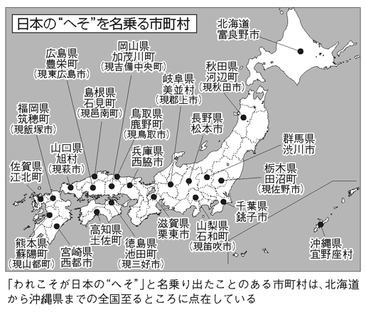

| 意外と知らない 日本地図の秘密 (PHP文庫) | |
| 日本博学倶楽部 | |
| PHP研究所 (2008) | |
――意外と知らない
日本地図の秘密
日本博学倶楽部
あなたは、いくつ解き明かせるか？――まえがきにかえて――
どこか目的地に向かうとき、必需品となるのが地図である。
ずいぶんと普及したカーナビはもちろんのこと、携帯電話で見られる地図サイトも、以前にくらべてかなり充実してきた。
しかし、そんな日本地図も、ただ目的地を探すためだけでなく、そこに描かれている地形や記号、地名などをじっくり観察してみると、いくつもの不思議が発見できる。
たとえば、山形・福島・新潟の三県に「盲腸」のような形をした県境があること、神奈川県内の「よみうりランド」にある巨人軍屋内練習場に東京都の飛び地が存在すること、また、兵庫県伊丹市の地形図に不思議な「ミニ日本列島」が掲載されていること......。
日本地図は、まさに謎と不思議の宝庫である。なぜ、こんなことになったのか？ その秘密を誰もが知りたいと思うはずだ。
本書は、日本地図にまつわるとっておきの秘密を、図版や写真、地形図を数多く使いながら解き明かしている。一読すれば、じつに多くの不思議が地図に記されていることを実感するばかりか、地図の見方が大きく変わるに違いない。
さあ、あなたもさっそく本書を開き、日本地図をめぐる〝不思議の旅〟に出発しようではないか！
二〇〇八年四月
日本博学倶楽部
目次
第１章
地図の境界線に
隠されていた
驚きのご当地事情
ある日、長野県の面積が減った分、
岐阜県の面積が増えたワケ
県の面積が増えた分、隣の県の面積が減るという珍事が起きた。二〇〇五（平成十七）年二月十三日、長野県では約二五平方キロもの県土が減り、隣の岐阜県ではほぼ同じだけ県土が増えたのだ。
これは一見すると奇妙な現象だが、もちろんミステリーではない。じつはこれ、馬籠宿で知られる長野県木曾郡山口村と岐阜県中津川市が越県合併したことによる。
つまり、山口村が長野県から岐阜県の所属になったのである。それゆえ、山口村の分だけ長野県の県土が減り、逆に岐阜県の県土がその分だけ増えたのだ。
近年、市町村間の大がかりな合併が全国各地でおこなわれたが、県をまたいでの合併は非常にめずらしく、歴史的にはじつに四十六年振り、そして平成に入ってからははじめてのことらしい。
こうした県をまたぐ合併が実現したのは、山口村と中津川市がかなり密接に結び付いていたからにほかならない。両自治体は、福祉やゴミ、し尿処理なども合同でおこなうなど、かつてから広域行政面で結び付いていた。
さらに山口村の人々にとっては、買い物や通勤通学などで中津川市に出かけることも多く、生活圏的には中津川市との一体感は以前から強かったのである。
この山口村の越県合併構想は、いまにはじまったことではなかった。昭和三十年代、昭和の大合併の折にも取りざたされたが、そのときは結局見送られた経緯もあった。いわば、越県合併の素地はすでにあり、それが念願かなってようやく実現したということになる。
このような県を越えた合併の構想は、これまで全国各地に一〇例ほどあったという。たとえば広島県大竹市は広島市より山口県岩国市のほうが距離的にも近く、また生活圏の結び付きも強かったため、越県合併の構想がもち上がっていた。しかし、その実現には至らなかった。
こうした形の合併は煩雑な手続きが多く、ハードルが高い。そのため、ほとんどが構想倒れに終わってしまうケースが多いようだ。
「荒川」という川もないのに、
なぜ「荒川区」というのか？
地名は、その地域にあるシンボリックな自然から名付けられることも少なくない。それは山であったり、川であったりする。たとえば東京都の荒川区も、この地域を流れる「荒川」という川にちなんで名付けられたことは容易に想像がつく。
一九三二（昭和七）年、南千住、日暮里、三河島、尾久の四町が合併して荒川区は誕生している。
ところが、現在の地図を眺めてみると、荒川区内のどこにも荒川は流れていない。これはいったい、どういうことなのだろうか。
現在、埼玉、山梨、長野の三県が境を接する甲武信ヶ岳から流れている荒川は、東京都北区で荒川と隅田川に分岐する。この分かれた川のうち、荒川と呼んでいるのは、足立・江戸川の両区域を分断して流れている人工の放水路のほうだ。しかし、じつはもう一方の隅田川と呼んでいる川こそが、かつての荒川だったのだ。
現隅田川こと旧荒川は、かつて「荒れ川」とも呼ばれ、大雨が降るたびに洪水を引き起こして周辺住民を悩ませていた。とくに一九一〇（明治四十三）年の大型台風による洪水では被害が大きく、何らかの防災手段を講じる必要に迫られたという。
そこで、都心部の水害を防ぐため、増水時の川の水を放流する目的で五〇〇メートル幅の荒川放水路建設が翌年にはじまった。工事は土地買収などで難航したが、二十年もの歳月を費やし、一九三〇（昭和五）年にようやく完成している。
この放水路のおかげで、それ以降、荒川、隅田川流域では洪水に悩まされることもなくなった。それにともない、この付近の人口は増えていき、地域の発展へとつながったのである。
そして一九六五（昭和四十）年、河川法によって人工河川の「荒川放水路」を「荒川」と呼び、それまで荒川区を流れていた自然河川の「荒川」を荒川支流の「隅田川」と名付けた。
こうして荒川区は、区名の由来となった荒川が実際に流れていない区となったのである。
福島県で見つけたまるで〝盲腸〟のような県境
福島・山形・新潟三県にまたがる飯豊山。ここを地図で見てみると、福島県の県土が山形・新潟両県の境界に割って入り、まるで盲腸のように伸びていることに気付く。この長さ約八キロの〝盲腸〟の道幅は、せいぜい数メートルしかなく、わずか数歩で山形、福島、新潟の三県を行き来できてしまう摩訶不思議な場所だ。
これは、飯豊山神社からその奥宮へとつづく参道の領有権を、福島・新潟両県が争った名残だという。
事の起こりは明治時代、福島県の県庁移転問題に原因があったようだ。一八八六（明治十九）年、この地に実川村と一ノ木村による領有権争いが勃発する。当時の内務省は、福島県に属する東蒲原郡実川村を新潟県に編入させることで問題を一応決着させたものの、実川村は飯豊山神社および飯豊山を領有し、分水嶺を県境とすべしと主張した。つまり、これらは新潟県のものだと宣言したわけだ。
だが、一方の福島県一ノ木村も負けてはいない。境内も道も昔から一ノ木村が領有していると主張し、それに応戦した。そして一九〇五（明治三十八）年、一ノ木村は山麓の登山口から山頂の神社までを境内地に編入することを許可されている。
両者が激しく争ったのは、この山がただの山ではなく、いわば〝信仰の山〟だったからだ。もともと飯豊山は七世紀に唐の智道和尚と役小角によって開かれ、山岳信仰の聖地として知られていた。十六世紀末に入ると、会津領主蒲生氏郷によって山頂の飯豊山神社の社殿や登山道の整備がなされ、会津の人々の生活や宗教と密接な関わりをもつ山となっていたのである。
そして、両者一歩も引かぬ長い争いに終止符が打たれたのは、一九〇七（明治四十）年のこと。県の管理官や両村の村長らの立ち会いのもとで合同現地査定を実施し、さらに藩政資料なども調査した結果、県境と土地、神社の帰属は福島県の一ノ木村にあると認定された。
こうして、山頂部の飯豊山神社と登山道は福島県の領域となった。そのため、現在の〝盲腸〟のような形の地域が出来上がったのである。
どっちに所属!?
栃木県と茨城県にまたがって建つ神社
フクロウを〝幸福を招く神の使い〟として崇め、別名「フクロウの神社」とも呼ばれる鷲子山上神社。御祭神は、鳥の神様である天日鷲命だ。
鷲子山上神社は八〇七（大同二）年、地元の大蔵坊宝珠上人によって創建された。もともとは四国阿波国の製紙業の神だったが、地元産業の振興のためにこの地に勧請されたのだ。その後、国土経営・健康開運の神である大己貴命、医療と酒造の神である少彦名命が鎮座した。
この神社は奇妙なことに、栃木・茨城両県の文化財指定を受けている。じつは、鳥居を境として向かって左が栃木県、右が茨城県になっているのだ。本殿、随神門、拝殿、幣殿がすべて県境線上にあり、社務所も二つ設けられている。
これはもともと水戸藩領だったものが、幾度かの県の統合を経たあとに、神社が県境線上にのるという状態になってしまったためだ。
こうなると、さまざまな問題が起こる。たとえば、鷲子山は一九八三（昭和五十八）年、「二十一世紀に残したい日本の自然一〇〇選」に選ばれたほどの豊かな自然が残っており、樹齢約千年の杉をはじめとした古木や大木が生い茂っている。これらの貴重な自然は、いったいどちらの県に属するのかが問題になったのである。
また、県指定文化財にするにしても、どちらか一方だけが所蔵するのはおかしいという意見も出されたことがあったという。
そこで、栃木・茨城両県は協議を重ね、両県合同で鷲子山上神社を盛り立てていくことになったのだ。たとえば、神社のゴミはふだんは栃木県に出すことになっているが、何かの催しなどによって大量のゴミが出たりするような場合は茨城県にも分けて出すなど、臨機応変に、持ちつ持たれつの良好な関係を保っているようだ。
鷲子山上神社の話によると、いまでは両県にまたがっている特異性によって、何か問題が起きるようなことはなくなったという。なお、二〇〇七（平成十九）年十一月には、「鷲子山上神社鎮座千二百年記念事業」を両県の協力のもとに実施している。
取手市から取り残された茨城県小堀地区の怪
茨城県と千葉県の県境は利根川の本流を境に、川の北側が茨城、南側が千葉となっている。ところが、茨城県取手市の小堀地区だけは川の南、千葉県我孫子市側に食い込んでいるのだ。ちょうど、川を挟んで取手市から取り残されたような格好である。
これは、一九一〇（明治四十三）年に起きた利根川の大洪水が関係している。もともと利根川は小堀地区のあたりで南側に大きく蛇行していたが、川が蛇行している箇所は、大雨が降るとどうしても氾濫しやすい。そこで、氾濫しないようにと、屈曲部分を真っ直ぐにする河川工事がおこなわれた。その工事が一九二〇（大正九）年に完了し、川の氾濫の心配がなくなった一方で、屈曲部分の内側にあった小堀地区は、取手市から分断されて飛び地になってしまったのである。
このときは小堀地区を我孫子市に編入させる話も出たようだが、小堀地区の人々は取手市民のままでいることを選んだ。当時、小堀地区のおもな産業は川舟による流通業であり、片や我孫子市は農業が主産業だった。小堀の人々は、業種の違う地域に編入されることを好まなかったのだという。
ただ、それまで徒歩で行き来できていた取手市の中心部が川向こうになってしまったことは、やはりとても不便だった。もともと小堀地区は取手市の一部であり、川向こうの取手市に通勤・通学する人々が多かったのだ。
そこで生まれたのが「小堀の渡し」である。小堀の人々は船着き場を設け、渡し舟で取手とのあいだを往復することにしたのである。現在では自動車やバスが普及して渡し舟に乗る人はだいぶ少なくなったものの、ＪＲ常磐線の鉄橋下にある取手ふれあい桟橋まで就航路が延び、低料金で乗船できる。
なお、利根川の蛇行部分は、工事のあとも三日月湖となって残っている。ここは昔の利根川の面影をよく残すことから「古利根沼」と呼ばれて利根川百景の一つとなり、釣り人たちにも人気のスポットとなっている。
県同士で交わされた〝飛び地トレード〟計画とは？
一九一〇（明治四十三）年の利根川の決壊時、新たな流れを人為的につくったために、利根川を挟んだ二つの地区が飛び地となった。それが、埼玉県熊谷市にある旧妻沼町の小島地区（現妻沼小島）と、群馬県太田市にある旧尾島町の前小屋地区（現前小屋町）だ。
小島地区は南側を利根川が流れ、北側は群馬県の太田市および旧尾島町と接していた。行政区分では埼玉県熊谷市に属するが、実際には利根川によって分断されているので、地理的にいうと群馬県側に近い。
一方の前小屋地区は、群馬県旧尾島町に属していたが、北側を利根川が流れ、土地自体が接しているのは埼玉県深谷市である。つまり、小島地区と前小屋地区のそれぞれが、埼玉県と群馬県の飛び地になっているのだ。
そこで、二〇〇三（平成十五）年、それぞれの飛び地を〝トレード〟してはどうかという大胆な案が出された。お互いに飛び地を交換すれば、地理的な問題が解消できるし、利害関係も大きな問題は生じないだろうというわけだ。
とくに、旧妻沼町小島地区の住民は群馬県太田市への合併を強く希望し、編入を求める要望書も提出されていたという。ところが当時、妻沼町は熊谷市などとの一市三町の法定合併協議会を設置しており、小島地区だけが太田市と合併協議をすることができなかったのだ。結局、小島地区住民の要望は聞き入れられなかった。
一方、トレード要員となった尾島町の前小屋地区の住民はどう考えていたのだろうか。二〇〇五（平成十七）年のアンケート調査によれば、約八割が埼玉県深谷市との合併を望んでいたという。
小島地区と前小屋地区の住民たちの思いは、飛び地トレードに前向きだったが、平成の大合併という大きな流れには逆らえず、このトレードは流れてしまう。
しかし現在、まったく可能性がなくなったわけではない。太田市役所によると、前小屋地区の住民の意向を反映しながら、現在、群馬県太田市と埼玉県深谷市とのあいだでの協議は継続中だという。今後の成り行きはまだ不透明だが、諸問題がすべてクリアされれば、前小屋地区が深谷市に編入される可能性もあるのだ。
一方、小島地区については、いまのところ太田市と熊谷市とのあいだでの協議はなされておらず、今後、協議がおこなわれるかも未定であるという。
なんと綱引きで県境を決めていた秋田県と山形県
日本の神話には、神様が土地を引っ張って領土を広げたという話もあるが、なんとこの平成の世になってもなお、綱引きで県境を移動させている県があるというから驚く。
たとえば、隣接する山形県遊佐町と秋田県象潟町（現にかほ市）の「三崎山国盗り合戦」もその一つで、鳥海ブルーラインの開通を機に、一九九三（平成五）年から一〇回にわたって県境合戦を繰り広げた。
このイベントでは三本綱による三本勝負の綱引きを実施し、勝利したチームが弓引きをおこなう。そして、弓矢が的に当たった得点により、その年の領土を広げることができるのだ。かつては最高で六八メートル程度も県境が移動したこともあったというから、そうバカにもできない、まさに〝国盗り合戦〟だったのである。
もっとも、国土地理院からその認定証がもらえたとはいえ、あくまでもこれはイベント。実際に地図上で県境が移動するというわけではない。しかし国盗りの勝負となればどちらも真剣になり、ついつい熱が入るというものだ。
この合戦の戦績は第一〇回まででお互いに五勝五敗。見事五分と五分に終わり、県境を最初の位置に戻してイベントは終止符を打ったという。
一方、現在も毎年一メートルずつ県境を移動しているのが静岡県と長野県だ。一九八七（昭和六十二）年からおこなわれている兵越峠での「峠の国盗り綱引き合戦」である。
兵越峠のある秋葉街道はかつて、武田信玄が天下統一を夢見て進軍したという歴史のある道。まさにここは国盗りにふさわしい舞台で、長野県飯田市南信濃と静岡県浜松市水窪町の代表が信州軍、遠州軍として綱引き対決をおこなうのだ。この勝負では、三本勝負で勝ったほうが、その年に一メートルだけ領地を広げることができる。
地理的に海のない信州軍は「太平洋を信州に！」を合言葉に、一方の遠州軍は「諏訪湖を遠州に！」を合言葉に応戦する。計算上、信州軍が太平洋を手に入れるには約六万五〇〇〇回連続して勝ちつづけなければならないという。なんとも気が遠くなりそうな話だ。
なお、二〇〇七（平成十九）年には遠州軍が勝ち、戦績は信州の一一勝一〇敗となって両者はほぼ互角。もちろんこちらも、実際の地図には反映されないが、両軍の心意気だけは相当なものになっているようだ。
横浜市に合併のラブコールを送った
山梨県道志村の恋の結末
平成の大合併では数多くの市町村が合併したが、二〇〇三（平成十五）年六月、神奈川県横浜市に、なんと約五〇キロも離れた飛び地合併を、しかもべつの県から申し込んだという村がある。
その村の名前は山梨県道志村。人口は道志村が約二〇〇〇人なら横浜市は約三五〇万人、一般会計予算は道志村が約一六億円なら横浜市は約一兆三〇〇〇億円と、何から何まで規模が違う横浜市へのアプローチだった。
当初、横浜市側はかなり驚いたというが、道志村では有権者の約三八パーセントにあたる六五三人分の署名を集めていた。合併特例法（市町村の合併の特例に関する法律）では、有権者の五〇分の一の署名があれば、住民から合併協議会の設置を求めることができる。また、道志村とて理由もなくやみくもに合併を申し込んだわけではない。道志村と横浜市は、百年以上にもわたる深い縁で結ばれていたのだ。
道志村は丹沢山地の北に位置し、豊富な降水量と豊かな森林に恵まれた水源地である。横浜市は日本ではじめて近代水道を設置した都市であり、明治の中頃には道志川から取水を開始している。
一九一六（大正五）年には、横浜市が道志村にある県有林を買い上げて水源涵養林とし、関東大震災で林が被害を受けた際には横浜市が復旧工事をおこなうなどの蜜月関係にあった。それを示すかのように、横浜市では道志村の水を、「横浜市」と「道志村」の名前を織り込んだネーミング「はまっ子どうし」として販売している。
だが結局のところ、「合併の申し込みは見送る」という旨の回答が、横浜市側から出された。経済的・人的交流は深いものの、これほど離れた地域同士が一体化することは現実的に簡単ではなく、たとえば火災があったりした場合、横浜市から消防車を走らせなければならないなど、物理的にも難しい問題点が浮き彫りになったのだ。
しかし二〇〇四（平成十六）年六月、横浜市と道志村は「友好・交流に関する協定書」を締結。道志村内には「横浜市民ふるさと村」が誕生し、横浜市民は温泉やプールなどの優待サービスが受けられるようになり、横浜市民による道志水源林ボランティアもはじまっている。
合併話をきっかけに、道志村と横浜市はこれまで以上に深い絆で結ばれることになったようだ。
平成の大合併で消えた三つの「東村」
同じ県内に同じ名前の市町村があるのはめずらしいことだが、群馬県にはかつて、三つの「東村」が存在していた。
その三つの東村とは「勢多郡東村」「佐波郡東村」「吾妻郡東村」である。勢多郡と佐波郡の東村のふり仮名は「あずまむら」、吾妻郡の東村については「あづまむら」と表記されていたが、発音はまったく同じであるために間違えられることもしばしばだった。
そこで群馬県の人々は、間違えることのないよう、それぞれを「勢多東」「佐波東」「吾妻東」と呼んでいたという。
だが、二〇〇五～〇六（平成十七～十八）年の平成の大合併により、勢多郡東村が笠懸町、大間々町と合併して「みどり市」に、佐波郡東村は旧伊勢崎市、赤堀町、境町と合併して新「伊勢崎市」に、そして吾妻郡東村は吾妻町と合併して「東吾妻町」となり、群馬県内にあった三つの東村はすべて消滅。めずらしい同名の村は次々と消えてしまった。
あまり知られていないが、かつて群馬県には三つどころか、なんと五つもの東村が存在していたという。前述の三つのほか、旧群馬郡と利根郡にも東村があり、一九五〇（昭和二十五）年の昭和の大合併でそれぞれ前橋市と利根村（現沼田市）となって消滅している。
しかし、いったいなぜ群馬県内に五つもの東村が生まれたのだろうか。市制・町村制が施行されたのは、一八八九（明治二十二）年のことだが、このときに東村が誕生しているはずである。
東村という村名は、『日本書紀』にある日本武尊のこんな伝説に由来するといわれる。
景行天皇の第二皇子で、年少にして武勇に優れた日本武尊は全国各地の平定に遣わされる。そして東征の際に海が荒れると、彼の妃である弟橘媛は自らの身を投げて海神の怒りを鎮めたという。そのおかげで、日本武尊は無事に海を渡ることができたのだが、その帰路に現在の群馬県と長野県の県境にある碓氷峠にさしかかると、亡き妻をしのんで「アズマハヤ（わが妻よ）」とつぶやき、嘆き悲しんだと伝えられている。
また、「東」というのは太陽が昇る方角であり、その明るいイメージも、村の名前にふさわしいとして受け入れられていたのかもしれない。
よみうりランドにある
巨人軍屋内練習場の一角は飛び地だった
東京の郊外、京王線・京王よみうりランド駅のすぐ前にある老舗遊園地「よみうりランド」は、入り口が東京都稲城市にあって、遊園地の公式な所在地表示も稲城市矢野口となっている。
ところが、地図を広げてみると、この遊園地の敷地の大部分は、じつは神奈川県川崎市多摩区菅仙谷となっている。
さらに、よみうりランド内にある巨人軍屋内練習場を見てみると、地図の種類によっては、なぜか東京都稲城市の飛び地らしき一角があることに気付く。
練習場内に飛び地ができた経緯については、よみうりランドも詳しいことはわからないようだが、これまで飛び地があるからということで問題になることはなかったという。
川崎市多摩区役所によると、詳細までは把握できていないものの、一八八九（明治二十二）年の市制・町村制の施行と、一九一二（大正元）年におこなわれた東京と神奈川の境界整理が絡んでいる可能性が高いという。
市制・町村制施行では、当時の橘樹郡内にあった六九の町村が一町一二村にまとめられ、都筑郡内にあった一一の村も二村に編成された。また、境界整理では多摩川を東京と神奈川の境界とし、飛び地の整理もおこなわれている。この際に、現在の巨人軍屋内練習場のある場所が、取り残されるような形で飛び地になってしまったのではないかというのだ。
少しうがった見方をすれば、「巨人軍は東京のチームだから、その練習場も東京にしておきたかったのでは？」という推論も成り立つが、よみうりランド側は、飛び地の存在はあくまで行政上の区分によるものであり、とくにこだわってそうしたわけではないという。
また、遊園地の公式所在地は東京都稲城市矢野口となっていることについても、入り口がちょうど稲城市内に位置している以上、たとえ遊園地の大部分が神奈川県川崎市にあっても、登記上まったく問題はない。
さらに、よみうりランドが登記されている稲城市役所によれば、巨人軍屋内練習場の飛び地が、稲城市であることを示す表札等の設置は市としてもおこなっていないそうで、これは、練習場内に住民が住んでおらず、行政上まったく不都合がないからである。
なお、よみうりランドの敷地内には「よみうりランド慶友病院」があり、地図を見たかぎりでは建物の上を稲城市と川崎市の境界線が通っている。
境界線が建物の上を通っている場合は建物の持ち主の意向により、どちらかを所在地として登記することができる。よみうりランド慶友病院は遊園地と同様、東京側を所在地として登記したようだ。
大都会・東京の銀座に、住所のない場所がある！
数々の高級店が建ち並ぶ東京の銀座に、住所不明の土地があるといったら驚くだろうか。
戦後間もない頃から現在に至るまで、その土地は中央区、千代田区、港区のうちのどの区に属するのか定まらないままになっていて、その広さはなんと約六〇〇〇坪にもおよぶという。古くから〝花の銀座〟と呼ばれ、にぎわう街の代名詞にもなっている場所で、いったいなぜこのような状況になったのか......。
その土地は中央区の銀座周縁にあり、千代田区と港区の区境にあたる。ここには戦後しばらくまで、中央・千代田両区を分ける外堀と、中央・港両区を分ける汐留川があった。
ところが、空襲で焼け野原になった東京の瓦礫処理のために、外堀と汐留川は埋め立てられ、そこに新たに六〇〇〇坪もの広大な土地が生まれたのだ。さらに、これらの土地の上には高架式の東京高速道路が建設され、その下には商店街がつくられた。
もちろんこれまでに、どの区に所属させるかを決めようという動きは何度もあったが、残念ながら現在まで合意には至っていない。しかも、その土地には正式な住所がないため、厳密にいうと、その土地にあるどの建物も「ゼロ区ゼロ番地」なのだ。
中央区と港区の区境だった汐留川の跡地には、一九六一（昭和三十六）年に「ＳＣ新橋センター」という商店街がオープンしたが、銀座という名前にこだわり、のちに「銀座ナイン」と改称している。銀座は八丁目までしかないが、商店街の人々は「銀座九丁目」の成立を願ってこの名にしたのである。
しかし、いくら所属区が決まっていないといっても、実際この土地に店舗を構えて営業をしている人がいる以上、地区の管理や税金の支払いなど行政上必要な手続きがあるはずだ。これらはいったい、誰がどのようにしておこなっているのだろうか。
じつは、建物ごとにそこのオーナーが自己申告して住所表記を選んでいるのだ。
たとえば銀座ナインの場合なら、中央区か港区のどちらか好きなほうに登録する。そして、区ごとに納付するたばこ税は、建物の中央に仮の境界線を引き、たばこの販売店や自動販売機の位置によって、どちらの区に納付するのかを決めているようだ。
神奈川県麻生区の飛び地は江戸時代から？
神奈川県川崎市麻生区にある「岡上」という地区を地図で見てほしい。一部が横浜市青葉区と接しているものの、周囲をほぼ東京都町田市に囲まれていて、岡上以外の麻生区、つまり麻生区本体からの飛び地になっていることがわかるだろう。岡上は比較的広い地区なので、広域の地図でも目に付きやすいはずだ。
だが、いったいなぜ岡上だけがこのような飛び地になっているのだろうか。
これは、明治時代からの度重なる行政区画の変更にまで遡る。
初期の行政区画では、恩田、奈良といった近辺の村々と同じ区画に属していたが、その後の町村合併の際、岡上村はほかの村と合併せず、一村の道を選ぶ。ただ、行政事務などに関しては北にある柿生村と協同でおこなっていたため、しだいに柿生村とのつながりが密接になっていった。
そして、さらなる合併が進められた際、岡上村はこれまで関係の深かった柿生村と同じく川崎市へ編入されたため、麻生区の飛び地となってしまったのである。
さらに、岡上村の周囲が東京都になったのも、三多摩地区が東京へ移管されるという行政区画の変更によるものだった。
麻生区役所によると、岡上地区内の行政は、麻生区のほかの地区とまったく同じ規定でおこなわれており、飛び地であるがゆえの不都合は生じていないという。
とはいえ、岡上には公立中学校がないため、地区内の岡上小学校に通っていた子どもたちは、卒業すると、私立の学校へ通う以外は麻生区本体側にある柿生中学校へ通うことになる。ほかの市をまたいで通うという、いわば〝越境通学〟をすることになるのだ。
一つ興味深いのは、昔から岡上村にかぎって所属がはっきりしなかったということだ。一五九一（天正十九）年の検地帳には、岡上村は都筑郡となっているものの、ほかの田園簿などでは多摩郡とされている。江戸時代になってからも、岡上村の所属には二通りの記載があったという。
二〇〇七（平成十九）年現在、岡上地区には約六七〇〇人が住んでいる。この地区は農業振興地域指定の「岡上の郷」として、のどかな田園風景を保ちつづけており、特産品である柿などの果物や野菜の栽培が盛んにおこなわれている。
神社の社殿だけが
飛び地になってしまった珍エピソード
「狐の恩返し」伝説の舞台としても知られる、茨城県の「女化神社」。
その伝説とは、ある若者が猟師に撃たれそうになっていた狐を助けたところ、その狐が美しい娘となって若者の前にあらわれる。二人は結ばれ、三人の子とともに幸せに暮らすのだが、やがて子どもたちに自分の正体を知られてしまった母狐は穴のなかに身を隠すことにしたという。するとその家は、孫の代まで狐の加護によって繁栄した──というものだ。
この女化神社は、一五〇五（永正二）年創建の稲荷明神を祀った神社で、奥の院の石祠「お穴さま」は、母狐が身を隠した場所と伝えられている。また、社殿の前には狐の石像が二基あるが、この神社ならではの子狐を連れている姿になっている。
そんな女化神社の所在地は、茨城県龍ケ崎市馴馬町字女化である。ところが地図を見ると、明らかに牛久市内にある！
じつはこの神社、社殿の周囲のわずかな土地だけが、そこから五キロほど離れた場所にある龍ケ崎市馴馬町の飛び地となっているのだ（奥の院は周囲一帯と同じ牛久市）。
その経緯は、神社の由来を記した『常州女化稲荷大明神縁起』に記載されている。江戸時代、野火のために社殿が類焼したうえ、しばらくそのままの状態になっていた。すると、それを見かねた馴馬村の松田次左衛門という男が宮を建てて神酒を供え、稲荷を祀ったという。
だが、次左衛門は神官ではなく俗家の出身だったため、やがて宮の管理を馴馬村の寺である来迎院に譲った。当時は神仏習合の時代だったため、そのこと自体はとくに不自然なことではなかった。来迎院のそばにある日枝神社も来迎院の別当とされていたくらいだ。そして女化神社は、馴馬村の村社として明治時代に至ったのである。
一八八九（明治二十二）年の市制・町村制の施行により、馴馬村はいったん馴柴村という名前になるが、一九五四（昭和二十九）年には龍ケ崎市に編入されることになった。これによって、女化神社の社殿の周囲のみが龍ケ崎市の飛び地となる結果になったのである。
東京都立水元公園にある遊水池はどこの管轄？
東京都葛飾区にある水元には、東京都で二番目に広い公園とされる都立水元公園がある。もともとは八代将軍徳川吉宗の時代、葛西領の用水を目的に、それを囲む堤防として築かれたものが、明治百年事業として整備された公園だ。
水郷風景を楽しめるこの公園には遊水池「小合溜」があるが、これが水元の地名の起源になっている。その由来はこうだ。
将軍吉宗の治世下にあった享保年間、紀州出身の治水家井沢弥惣兵衛は幕府の命により、千葉の手賀沼の干拓や神奈川の酒匂川の改修など、数々の治水事業を手がけた。
その彼が一七二九（享保十四）年、東葛西領五〇余村の灌漑用水の水源として小合溜を開削した。そのため、田畑に水を供給する源という意味から「水の元」、すなわち「水元」と名付けられたのである。
こうして、灌漑用水として大切な役割を担ってきた小合溜は、いまでは公園のシンボルとして、また格好の釣り場としても親しまれているが、じつはちょっとした問題を抱えている。
というのも、ここの住所はいまだに管轄が定まっていないのだ。なぜなら、水元公園は東京都葛飾区の区域だが、小合溜側は埼玉県の三郷市と隣接している。そのため三郷市側は、小合溜のある河川上の中央を境界であると主張し、一方の葛飾区は、小合溜は以前から葛飾区の区域であり、三郷市側の水際こそが境界だと主張しているのだ。両者の主張には食い違いが見られるため、現在も協議はつづいているという。
つまり小合溜は、東京都と埼玉県の境界がいまだはっきりしていない場所というわけだ。両者ともに決め手があるわけでもなく、また、水面上のことでもあるだけに、境界線の引き方も難しいのだろう。
現在、小合溜全域の管理については、発生したゴミも葛飾区の規定で処理するなど、全面的に葛飾区がおこなっているという。東京都か埼玉県か、今後の協議の進行しだいで、その境界の区分に進展がみられるのかもしれない。
いったいなぜ、埼玉県新座市に
東京都練馬区の飛び地ができたのか？
埼玉県新座市の一角に、なぜか東京都練馬区西大泉町がある。つまり、そこは練馬区の飛び地ということになるが、町といっても面積は二〇〇〇平方メートル弱しかなく、飛び地と練馬区本体との距離もわずか約六〇メートル。ゴミ処理なども練馬区がおこなっているので、生活上の不都合はないらしい。
飛び地の存在が判明したのは、一九七三（昭和四十八）年のこと。この一帯を開発しようとしていた業者から練馬区への事前相談がきっかけだった。翌年、練馬区ではこの飛び地を新座市に編入するという方針を決め、新座市側も土地所有者の承諾があればそれに異存はないということになった。その後、開発業者はその飛び地を〝将来、新座市に編入される土地〟として分譲を開始したという。
この飛び地が生まれた詳細については明らかではないが、付近の土地は、江戸時代には幕府の直接支配地や大名領地となっていたようだ。とくに大名領地については飛び飛びに所在していたため、その土地のうちの一つがそのまま残ってしまったのではないかとも考えられている。
また、かつてこの一帯が鷹場（鷹狩りをする場所）だったといういきさつもある。江戸時代初頭、このあたりは尾張徳川家の鷹場で、小榑村の名主が鳥見頭として管理していた。その後、一部の土地が米津藩領となり、やがて明治時代を迎えることになるが、名主は土地を維持するため、飛び地にも小榑村の番地を付けたのではないかという説もある（『大泉今昔物語』加藤惣一郎）。
明治以降は行政区域の整理が随時おこなわれ、所々にあった飛び地は順次整理されていった。一八八八（明治二十一）年には、翌年施行される市制・町村制に先立ち、東京府と埼玉県のあいだでも小榑村などの飛び地処理を実施しているが、その際、ほとんどの飛び地は「戸口無之（家屋のない土地）」と記録されている。
つまり、西大泉町の飛び地も当時は家屋がなかった可能性が高く、その土地が取り残されたとしても誰も気が付かなかったのかもしれない。
二〇〇八（平成二十）年四月現在、この飛び地に関して練馬区と新座市のあいだで継続的に情報交換がなされてはいるものの、具体的な編入等の動きはまだなく、しばらくは現在の状況がつづきそうだ。
新潟県刈羽村に飛び地がある事情
二〇〇七（平成十九）年に起こった新潟県中越沖地震で原発の安全性が指摘され、ニュースでもよく耳にするようになった柏崎刈羽原発。それがある新潟県刈羽村は、周囲をぐるりと柏崎市に囲まれるという、ちょっと奇妙な形になっている。
これは二〇〇五（平成十七）年に、隣の西山町が柏崎市に編入したことによって生じたものだ。ならば、刈羽村も柏崎市に編入してもよさそうなものだが、刈羽村の財政は安定しているため、合併するまでにはおよばないのだ。
だが、奇妙なのは形だけでない。刈羽村は長岡市に接する飛び地まで有しているのである。
刈羽村の飛び地が誕生した背景には、まさに昭和の大合併の混乱をめぐるドラマがあった。戦後、現在の飛び地にあたる油田が所属していた中通村は、山の上にある小学校を改築するのか移転するのかをめぐり、村内で大論争を繰り広げていた。油田は、子どもたちの通学の不便さから移転を反対。隣村の学校に子どもを通わせる手段までとって抵抗した。
それでも結局、小学校の移転が決まると、油田の小学校は取り壊され、村の住民たちに深い禍根を残すこととなった。そんな折、中通村の柏崎市への編入が決まる。油田・黒川両地区は、学校問題での遺恨もあり、中通村にあるほかの地区と袂を分かつことになった。そして、生活圏が同じ長岡市との合併を希望したものの、事はすんなりとは進まなかった。というのも、長岡市と合併してしまうと〝飛び地〟状態になってしまうからだ。
そのため、長岡市と隣接する大積村と合併し、まとめて長岡市に編入することでなんとか合意にこぎつけた。
しかし、これでひと安心と思ったのもつかの間、当の大積村で合併をめぐる反対案がもち上がる。合併話を断ってきたのである。さらには、飛び地を嫌った長岡市からも合併を断られるという羽目になった。
このとき、合併先を失って困り果てていた両地区に手を差し伸べたのが刈羽村だった。「飛び地でも構わないから」と合併を誘われた油田と黒川だが、喜び勇んで返事をするというわけにはいかなかった。飛び地になるという現実から、地区内でも反対意見が多かったのだ。
それでも一九五六（昭和三十一）年九月、いつでも刈羽村から外れることができるという条件付きで合併にこぎつけた。
いまでは、飛び地とはいえトンネルが開通したことにより、両村の人々も刈羽村の中心地へは車で十分程度で行けるようになっている。それゆえ、生活上とくに不便さを感じることはないという。
隣町を飛び越えてまで
静岡市と合併した蒲原地区
桜エビの産地としても知られる静岡県蒲原地区は、なぜか隣の由比町を飛び越えて静岡市と合併したことにより、この地区だけが静岡市から取り残されたような状態となっている。
このようになったのは、そもそもこの地区が目指していた蒲原町、由比町、富士川町の合併が頓挫したことが原因だった。
当初は三町での合併を予定していたが、協議の結果、富士川町が合併条件に難色を示したこともあり、計画は破綻。そのため、それぞれの町は独自で合併策を模索しなければならなくなった。
蒲原町と由比町がそれぞれ合併先に選んだのは、偶然にも同じ静岡市。両町とも静岡市に通勤・通学している人が多く、同じ生活圏ということから見ても、これはごく自然な成り行きだった。そこで、両町は一時、同時に合併協議を重ねる。この話が順調に進み、由比町、蒲原町ともに静岡市になればべつに何の問題もなく、もちろん蒲原町も飛び地になることはなかった。
ところが、事態は急変する。なんと、由比町側で合併が否決されてしまったのだ。そのため、蒲原町だけが静岡市と合併し、静岡市清水区となったことで、合併していない由比町を挟んだ飛び地となってしまったのである。
飛び地というと不便なようにも聞こえるが、実際のところ、蒲原地区の旧町役場が清水区役所の支所として機能しているため、住民にとって不都合はないという。
ただ、地図を見るとなんとも不可解に感じてしまうこの飛び地も、じつは近いうちに解消される。というのも、由比町が二〇〇八（平成二十）年十一月に清水区に編入されることになったからだ。
また、富士川町のほうも、隣接する富士市とやはり合併の予定だという。
合併をめぐって右往左往した三町も、どうやら二〇〇八年には落ち着き先がはっきりと決まりそうだ。
平成の大合併で日本一広くなった高山市は、
東京都とほぼ同じ大きさ
日本には、東京都とほぼ同じ面積をもつ市がある。市レベルで都と同じ面積とは驚きだが、平成の大合併によって誕生している。
その市とは、岐阜県北部、飛地方の中央に位置する高山市だ。飛地方といえば、世界遺産の白川郷などでも有名な自然豊かな場所である。
二〇〇五（平成十七）年の二月に誕生した高山市は、大野郡丹生川村、清見村、荘川村、宮村、久々野町、朝日村、高根村、吉城郡国府町、上宝村の九町村を編入合併してできた。その市域は、長野・富山・石川・福井の四県と接しているという広大なもので、じつに二一七七平方キロにもおよぶ面積は、二一八七平方キロの面積をもつ東京都とほぼ同じ広さだ。
ただ、せっかく「日本一広い市」という称号を手にしたのだから、高山市としてはそれを全国に向けてアピールしているのだろうと思いきや、じつはそうした活動はほとんどおこなっていないという。少々もったいない気もするのだが、高山市の魅力は、あくまでさまざまな市や町、村の文化が融合したところにあるらしい。
今後さらなる合併を考えて、日本一広い市の記録を維持するつもりもないようだ。平成の大合併も一段落し、これからは市民生活の向上や人口の減少を食い止めるための対策に、まずは全力をあげていくのだという。
たしかに、合併によって市の面積があまりにも広大になると、とくに高齢者などは市内を移動するのもたいへんになる。そこで高山市では、無料のコミュニティバスや地域福祉バスを運行し、市民生活の利便性をはかっているという。
記録ねらいよりも、地に足のついた対策のほうが優先ということだろう。
第２章
道路と鉄道をたどって
気が付いた
地図の不思議
東京のお台場に、
地図に名のない〝幽霊橋〟がある
観光やデートスポットとして人気のある、東京・お台場のシンボルといえば、誰もが知っている「レインボーブリッジ」だろう。織田裕二主演の映画の舞台にもなった、長さ七九八メートルのこの橋は、首都高速一一号線や東京港臨海道路、東京臨海新交通システム「ゆりかもめ」が併設された巨大なつり橋である。
もちろん、お台場の橋はレインボーブリッジだけではない。お台場地区と東京ビッグサイトがある有明地区とを結ぶ「夢の大橋」もある。この夢の大橋は、最大幅六〇メートルもある歩行者専用の橋。夜には歩道がライトアップされ、幻想的な雰囲気を演出してくれる。
では、橋はこの二本だけなのかというと、さにあらず。このすぐ近くには、なんと〝幽霊橋〟も存在するのだ。
幽霊橋といっても、べつに幽霊の出るスポットというわけではない。その名前が地図に載っていないため、「まるで正体不明の幽霊のようだ」という意味だ。ただ、実際にはちゃんと「青海橋」という名前があり、その姿を目にすることもできる。
青海橋は、レインボーブリッジの東側にある幅一四・五メートル、全長二六四・九メートルの橋で、有明橋と夢の大橋とのあいだに位置している。一九八七（昭和六十二）年に数十億円もの建設費をかけてつくられ、建設された当初の青海橋には、埋め立て工事用車両が数多く行き来していたという。
この青海橋は、ただ工事車両の通行のために架けられた橋ではなかった。埋め立て工事終了後は、一般車両が通る予定だったのである。ところがその後、開発地域の見直しがおこなわれ、青海橋の両側にあった道路が閉鎖。青海橋だけがポツンとそこに取り残されてしまったのだ。
こうなってしまうと、ふつうであれば取り壊される。しかし、青海橋は有明西運河に架けられているため、橋脚は海底三〇メートルまで打ち込まれている。この橋脚を取り壊すとなると、建設費と同額程度の費用がかかると見積もられたのだ。
橋は存在するが、実際には通れない。そのため、地図上に橋の形があっても、名前は記載されていないのである。
本物の「美人証明書」が手に入る道の駅とは？
ドライバーの休憩施設として設けられた「道の駅」は、二〇〇七（平成十九）年八月現在で全国に八六八カ所もあり、各地域の特性を活かしたユニークな商品などを取り扱っている。
その一つを紹介しよう。秋田県湯沢市には「おがち」という道の駅が設置されているが、おがちは平安時代の女流歌人・小野小町の生誕の地とされている場所だ。
小野小町と言えば、六歌仙、三六歌仙の一人とされ、情熱的な恋を主題にした歌を数多く詠んだことで知られるとともに、日本が誇る絶世の美女としても名高い女性である。
この道の駅おがちでは、小野小町にちなんだある証明書が発行されていて、その名も〝美人証明書〟。これはＡ５判のピンク地の紙に小野小町のイメージ写真がうっすらと印刷されたもので、「小野小町に優るとも劣らない美人であることを証明します」と記されている。
証明書には希望の名前を記入してもらうことができる。そのため、恋人や子どもへのお土産として買い求める人が多く、三月十四日のホワイトデー近くになると、バレンタインのお返しに買い求める男性客も多いという。もちろん、男性の名前でもペットの名前でもＯＫ。価格は一枚三一五円と、洒落のきいたお土産としてはかなりリーズナブルだ。
道の駅おがちの担当者によると、美人証明書は月平均で五〇枚は売れるヒット商品だという。もっともよく売れるのはお盆の帰省時期で、毎年八月の売り上げ枚数は三〇〇枚以上にもなるそうだ。
一九九九（平成十一）年四月の道の駅オープン以来発売されている美人証明書は、当初は白地の証明書だったが、二〇〇七年に現在の模様入りのデザインにマイナーチェンジしている。いまのところそのデザインをさらに変更するかについては未定だが、引きつづき発行していくという。
じつはあまり知られていないが、この美人証明書は道の駅おがちまでわざわざ出向かなくても入手できる。なんとインターネットで手軽に購入できてしまうのだ。「ぜひとも手に入れたいが、さすがにおがちまでは遠すぎて行けない」という人にはピッタリだろう。ただ、インターネット時代ならではのサービスとはいえ、せっかくの証明書の価値が半減してしまうような気がしないでもない。ベストなのはやはり、現地で入手することである。
『どんぐりころころ』『夏の思い出』......
車が走ると歌いはじめる道路がある！
車を走らせると道路から音楽が聞こえてくる「メロディーロード」が、全国各地に誕生している。
これを考え出したのは、北海道標津町のとある建設会社。凹凸のあるアスファルトの上を車で走るとタイヤから振動音が聞こえてくるが、走行スピードを変えると当然その音も変わる。そこで、アスファルト上の凹凸の幅を調節すれば、その音で曲を奏でることができるのではないかと考えたのだという。
もともと、道路には溝を刻む「グルービング」という工法があり、スリップ防止や排水性の向上、路面凍結対策などに用いられてきた。
メロディーロードはそれを応用したもので、道路に複数の溝を刻んで凹凸をつくると、間隔の狭いところでは高い音が、広いところでは低い音が出る。これを踏まえたうえで、メロディやリズムに応じて溝の間隔を変えてみたところ、道路に曲を奏でさせることに成功したのである。
そして、ついに二〇〇四（平成十六）年、歌手加藤登紀子による大ヒット曲としても知られる『知床旅情』を奏でる道路が標津町に完成し、一大人気スポットとなった。
メロディーロードはただ音楽を奏でる道というだけでなく、交通安全上の効果も期待されている。なぜなら法定速度で走行しないとリズムが変わり、きちんと聞こえないようにつくられているからだ。下り坂やカーブに入る少し前にメロディーロードを設置すれば、スピードの抑制やドライバーの注意喚起、居眠り防止などにつながることになる。
現在のところ、愛知県豊田市には『どんぐりころころ』、和歌山県紀美野町には『見上げてごらん夜の星を』、そして群馬県沼田市には『夏の思い出』が聞けるメロディーロードが設置されている。また、お隣の国、韓国のソウル外郭循環高速道路にも『メリーさんのひつじ』を奏でる道路が完成したという。
沼田市の『夏の思い出』は、農業用道路の「利根沼田望郷ライン」で聞くことができる。この道路は、開通したものの交通量が増えずに有効活用できていなかったため、二〇〇六（平成十八）年十一月にメロディーロード化の工事を開始、雪溶けの翌年三月に完成した。
その工事にあたっては、全長四三・九キロの道路のうち交差点のない地点で、なおかつ周囲に人家のない場所が選ばれた。これは、メロディーロードは音が出る装置であることを考慮したため。この道は尾瀬に程近く、『夏の思い出』という選曲もなかなかだった。最近では、県外からわざわざこの道を走るためにのみやって来る人も増えているという。
じつは存在していない!?
「埼京線」という名の路線
埼玉県の大宮駅と東京都の大崎駅を結ぶＪＲ埼京線。二〇〇二（平成十四）年からは、東京臨海高速鉄道りんかい線にも通じて東京都江東区の新木場まで結ばれ、ますます便利になっている。
ところが、この「埼京線」という名の路線は、実際には存在しない。「そんなバカな。じゃあ毎日乗っているあの電車はなんだ？」と言いたくなる人もいるだろう。
じつは、埼京線というのは複数の路線をまたぐ複合路線であり、大宮～赤羽間は東北本線（別線）、赤羽～池袋間は赤羽線、そして池袋～大崎間は山手線（山手貨物線）を走っている。つまり、独自の区間がまったくない路線なのだ。地図でよく目にする埼京線という名前は正式名称ではなく、埼玉と東京を結ぶところから付けられた〝愛称〟である。
そんな埼京線における大宮～赤羽間が「東北本線」という名称になったのには、あるエピソードがある。
一九七一（昭和四十六）年、当時の国鉄が東北・上越新幹線の建設ルートを発表すると、埼玉県の戸田市、浦和市、与野市などの自治体は激しく反発。騒音などの公害に対する懸念のほか、新幹線より通勤ラッシュの緩和が先だとする声も挙がった。当時、この地区の通勤ラッシュは全国一といわれるほどすさまじかったのだ。
結局のところ、各自治体は通勤用に新たな路線を設けることを条件に、東北新幹線の建設を受け入れた。この新たな路線というのが大宮～赤羽間であり、このときに「東北本線」と命名されたのである。
この埼京線に見られるような、正式名称ではない路線はほかにもある。たとえば、東北本線、東海道本線を走る「京浜東北線」、高崎線、宇都宮線（東北本線）、東海道本線、横須賀線を走る「湘南新宿ライン」などもじつは愛称だ。
また、観光地を走る路線には「うみねこレール八戸市内線」や「大和路線」など、その地域のキャッチコピーとして愛称で呼んでいる路線が多いようだ。
ＪＲ路線なのに、
管轄が東京メトロの「綾瀬駅」の謎
ＪＲ東日本の常磐線は、東京都の日暮里駅から宮城県の岩沼駅までの一都四県を走る鉄道路線で、日本でも有数の通勤路線として知られている。だが、この路線にある「綾瀬駅」を利用したことがある人なら、「どこかヘンだ」と感じたことがあるに違いない。
なぜなら、この駅で働く職員たちはみな東京メトロの制服を着用し、ホームにある駅名などの表示もすべて地下鉄のデザインになっているからだ。
綾瀬駅ではＪＲ常磐線と東京メトロ千代田線の電車が発着しているので、それぞれの職員が駅にいるのはなんら不思議なことではない。ところが、この駅の場合はＪＲの電車の発着に携わっているのも、窓口や改札にいるのも、すべて東京メトロの職員で、ＪＲ常磐線の表示までが東京メトロ仕様のデザインなのである。
これは、綾瀬駅に帝都高速度交通営団（当時）千代田線の電車が乗り入れることになった際、当時の国鉄と営団の双方が協議した結果決まったことで、車両整備をおこなう場所の都合などから駅の管轄は東京メトロとなり、働くのもすべて東京メトロのスタッフとなったのである。
綾瀬駅に千代田線が乗り入れを開始したのは一九七一（昭和四十六）年のことだが、二〇〇七（平成十九）年が終わった時点でも、この綾瀬駅にはみどりの窓口や指定券自動券売機などＪＲのサービスは設けられていない。そのうえ、当初はＳｕｉｃａやＰＡＳＭＯなどのカード類も使えなかったという。
ただし駅の運営に関しては、ＪＲと東京メトロのあいだにさまざまな細かい取り決めがなされている。たとえば、綾瀬駅から隣の北千住駅まではＪＲと千代田線のどちらでも行けるが、乗車券を発行するのは東京メトロで、乗車券の金額はＪＲの計算方法による。これは、現在の両社を比較した場合、この距離ではＪＲのほうが安いためだ。なお、この駅の入場券収入はすべてＪＲのものとなる。
ただ、このようなユニークな形態をとっていても、ＪＲの職員も駅に常駐している。これは、運転手と車掌の乗り換えがこの駅でおこなわれるためだ。それでも、ＪＲ職員と東京メトロ職員の詰め所（乗務員の待機所）は完全に別々となっているので、両社の職員が入り混じるようなことはないようだ。
日本一短い国道はわずか一八七メートル！
国道といえば、全国の重要な場所を結ぶ日本の幹線道路であり、いくつもの都道府県にまたがり、網目状に発達している。だが、そのなかには長さがわずか一八七メートルと、人がひとっ走りするだけで端から端へ簡単にたどりついてしまう短い国道が存在する。
この日本一短い国道は、神戸市にある国道一七四号線のこと。国道二号線とフラワーロードの交差点から神戸港に至るまでの道路で、「日本で一番短い国道です」という看板も設置されている。
しかし、そもそもなぜこんな短い道路が国道として存在することになったのだろうか。
国道一七四号線が誕生したのは一九五三（昭和二十八）年のことで、当時は神戸税関から国鉄三ノ宮駅南側の交差点へとつづく、長さ九四〇メートルの道路だった。
だがその後、三ノ宮駅のすぐ南を走っていた国道二号線のルートが海側に変更となる。つまり、国道二号線に至る国道一七四号線の大部分は国道ではなくなり、九四〇メートルのうちの一八七メートルだけが国道として残ったのだ。
もっとも、よく考えれば当初の九四〇メートルという長さ自体、国道としては極端に短い。しかし、国道として定められるための条件に距離は関係なく、国道一七四号線がいくら短いとはいえ、この道路が神戸港の物資を流通させるための重要な幹線道路であったことには変わりはない。こうして、日本一短い国道が誕生したのである。
では反対に、日本でいちばん長い国道はどこだろうか。
それは、長さ八六八キロを誇る国道四号線だ。この国道は、江戸時代の日光街道および奥州街道にあたり、現在でも東京、埼玉、茨城、栃木、福島、宮城、岩手、青森と、本州北部を貫く大動脈となっている。
また、日本でもっとも長い直線をもつ国道は一二号線である。この国道は北海道の札幌市と旭川市を結ぶ約一四七キロの幹線道路だが、そのなかの美唄市光珠内町九二から滝川市新町六丁目までの区間は、カーブがない二九・二キロの直線となっている。まさに、広大な北海道ならではの直線道路といえるだろう。
通行人専用？
途中に階段があるため車が通れない国道
「国道」という音の響きだけで想像すれば、国が指定した重要道路ゆえ、誰しもが舗装された幅の広い道路を想像するに違いない。ところが、本州の北の最果ての地には〝車が通れない国道〟があるという。
その国道は、青森県の北部、弘前市から津軽半島を周遊してその先端にある龍飛崎へとつづく国道三三九号線だが、この全線を車で走りきることは不可能である。
「途中で行き止まりなの？」とでも聞きたくなるが、たしかに自動車は行き止まりになってしまう。なぜなら、国道の途中に全長三八八・二メートル、段数三六二にもおよぶ階段があるからだ。これでは自動車も通りようがない。丁寧にも「階段国道」と書かれた標識も立つこの道路は、いわば歩行者専用道路なのである。
国道なのに自動車が通れないというのも妙な話なのだが、この道路が一九七四（昭和四十九）年に国道に指定された際には階段はなく、急な坂道になっていた。そのため、車両が安全に通行できるように整備する必要があった。
しかし、坂道の途中に小・中学校があったことから、子どもの登下校に配慮して一九九三（平成五）年から四年をかけて階段が設置されたのである。
とはいえ、国道が分断されてしまって困るのは自動車である。自動車に乗る人であれば、「じゃあ車はどうすればいいの？」と声を荒らげたくなるかもしれないが、その点は大丈夫。国道の手前に整備された迂回路が走っていて、車はいったん国道を外れてそこを通り抜ければとくに支障はない。
こうして無事、車道が確保されたこともあり、現在も国道はそのまま学生たちの通学路として階段国道のままとなっている。
青森県庁によると、日本で唯一の歩行者専用国道というめずらしさから、よく雑誌などにも取り上げられるようになり、いまでは多くの観光客が訪れる人気スポットの一つになっているとか。たしかに、車の通行を気にせずのんびり歩ける国道などそうは見当たらない。眼下に津軽海峡を見下ろしながら、ゆっくりと「階段国道」を歩いてみるというのも、なかなかオツな旅である。
「通行不能」という標識があるおかしな国道
階段があるために自動車が通れない国道については、前項でも詳しく紹介したが、そのほかにも車が通行できない不通区間をもつ〝分断国道〟が三〇路線以上も存在するという。これらは「開かずの間」ならぬ、「開かずの国道」とも呼ばれているが、通行できない理由はじつにさまざまだ。
そのなかには、途中が登山道になっているために自動車が通れないというめずらしい国道もある。舗装されていない登山道がはたして国道といえるのかという疑問もあるが、福島県いわき市と新潟市を結ぶ国道二八九号線は、途中部分が登山道のために分断されているのだ。
この国道は、阿武隈川源流近くの甲子温泉までは舗装された道路なのだが、そこから先の甲子峠は舗装されていない登山道となる。「通行不能」と標識にも案内され、もし自動車で無理に突き進もうとしても、人がすれ違うので精一杯という幅の山道がつづくため、引き返さざるを得ない。
ただ、そんな道でもれっきとした国道なのである。途中、この道が国道なのだということをアピールするかのように、「国道二八九号」と書かれた標識も設置されている。そして、この甲子峠を越えた下郷町からは再び舗装された道がつづき、自動車でスムーズに通行できる。まさしく、途中が途切れている〝分断国道〟なのだ。
しかし、いったいどうしてこんな奇妙な状態になってしまったのだろうか。というよりも、そもそもなぜ登山道を国道にしたのかが不思議である。じつはこの国道、広域的な幹線道路として期待されて開通したものの、甲子山付近が険しすぎて、思うように道路を開通させることができなかったのだ。
もちろん、行政側もただ手をこまねいているわけではない。この交通不能状態を解消するため、全長四・三キロにわたる甲子トンネルを建設するなど、新道「甲子道路」を開通させるための工事を着々と進行中だ。この道路は、二〇〇八（平成二十）年の開通を目指しているという。
二〇カ所以上もある!?
海の上を通る不思議国道
本書では、自動車が通れないという珍国道も紹介しているが、それらは少なくとも人は通れる道だ。ところが全国には、人すらも通行できない〝幻のルート〟が存在するのをご存じだろうか。それは「海上」である。海上といっても橋やトンネルなどがあればなんら問題はないが、道自体がないのだ。ふつうに考えれば、「海上は道路ではなく航路なのでは？」という疑問をもってしまうだろうが、北海道の国道二七九号線は、まさしく途中に海上国道をもつ国道なのだ。
函館駅の駅前交差点を起点としたこの国道は、実際の道路部分は旧桟橋までのわずか一・八キロしかない。だが、じつはその先の津軽海峡を渡る海上の道筋も含む、青森までの総距離一〇七キロの路線が国道に指定されている。つまり、海上をまたいで国道が通っている状態である。
しかし、なぜ実際に道のない海上までを国道としたのだろうか。
それは、たしかに国道は全国の主要都市や港湾などを結ぶ幹線道路だが、実際の道路を指して呼ぶべきものではないからだ。国道はあくまで、「Ａ地点を出発し、Ｂ地点経由でＣ地点に到着」という路線に対して与えられる名称なのである。それゆえ、海上に道がなくてもフェリーなどの交通機関があり、重要な交通路と認められれば、たとえ海上であっても国道に指定されるというわけだ。
また、北海道と青森を結ぶ海上国道はほかにも三三八号線と二八〇号線の二つがあるが、海上国道はもちろん北海道だけの特許というわけではない。たとえば、鹿児島県垂水市と鹿児島市を結ぶ国道二二四号線など、全国各地には島を結ぶ海上国道が二〇カ所以上も存在している。
こうした海上国道の場合、路線上では当然船やフェリーで移動することになる。それならば、航路そのものが国道として指定されているかというと、それはノーだ。船の通るコースはあくまで航路。海上の国道は、いわば路線名を示しているにすぎない。「姿形のない架空の道路」というわけだ。
知らなかった！
東京都目黒区の住宅街に競馬場!?
閑静な住宅街としても知られる、東京都目黒区下目黒。ここの四丁目と五丁目が接するあたりに、南北にゆるやかなカーブを描いた通りがある。地図でよく見てみると、その形がたしかに周囲の道路とは異質なために、少々奇妙な感じがする。

これはかつて、この一帯に実在した「目黒競馬場」のコース跡なのだという。ちょうどコーナーから観覧スタンド前の直線に向かう弓なりの部分をイメージすればいいだろう。
目黒競馬場が開設されたのは一九〇七（明治四十）年のことで、その背景には、政府が軍馬を改良・増産する目的で、大きな収益を上げる馬券付き競馬を後押ししたという事情があった。
当時の目黒は農村地帯で、競馬場用地の大部分は借地だったが、その面積は約六万五〇〇〇坪、三階建ての観覧スタンドや練習馬場、出走馬を観客に見せるための下見馬場まで併設した本格的なものだった。この競馬場はたいへんな評判で、大勢の観客たちが足を運んだが、その人気が沸騰しすぎ、一攫千金を夢見て破産する者が続出したため、賭け行為が中止されたこともあった。
「東京優駿大競争」と呼ばれた第一、二回の現日本ダービーが開催されたのもこの競馬場で、最盛期には約一キロ離れた目黒駅まで入場を待つ人の行列ができたという。
だが、東京の人口が増えるにつれて目黒にも宅地化の波が押し寄せ、競馬場の周辺では騒音や厩舎の臭いに対する苦情が多く出るようになった。さらに、競馬場用地の地代が上昇したこともあり、ついに一九三三（昭和八）年、目黒競馬場はその歴史に幕を下ろし、東京都府中市に移転する。そして同年十一月、府中競馬場（現東京競馬場）がオープンしたのである。
このコーナー跡以外には、どこを見渡しても、かつてここに競馬場があったとは想像しにくいが、目黒通りの坂上にあるバス停には「元競馬場前」という名前が残されている。そして、そのそばには「目黒競馬場跡記念碑」と銘打った小さな馬の銅像が立っており、第一回日本ダービーの勝ち馬ワカタカ号の父親で優秀な種牡馬でもあった、トウルヌソル号の勇姿をいまに伝えている。
ＪＲ山手線の正しい読み方は、
「やまのてせん」か「やまてせん」か？
東京の地図を見たとき、真っ先に目に付くであろうＪＲ山手線。東京都内をぐるりと環状に走る鉄道路線で、若草色のラインが入った銀色の車体もよく目立つ。地方から上京してきた人は、まず山手線を覚え、それを基準にして少しずつ東京の地理を知っていくのだともいわれている。
この山手線は「やまのてせん」と読むのが一般的で、ＪＲ東日本の公式表記でも「Ｙａｍａｎｏｔｅ Ｌｉｎｅ」となっている。一説によると、明治時代の路線工事における上申書には「山ノ手線」と書かれていたというが、ここから現在の呼び方が生まれたようだ。
なぜ、こんな話をもち出したのかというと、一九四五（昭和二十）年以降、なぜか「やまてせん」と呼ばれる時期があったからだ。これは、戦後日本に進駐してきたＧＨＱ（連合国軍総司令部）が、当時の国鉄に対して鉄道路線名をアルファベットで表記するように命じた際、国鉄の担当者が「Ｙａｍａｔｅ ＬｏｏｐＬｉｎｅ」と表記してしまったのが発端だったようだ。
当時国鉄の職員たちは、仲間うちの俗称で山手線のことを「ヤマテ」と呼んでいた。一日に何度も口にする言葉であれば短いほうが便利であり、なにより伝達もすばやくできる。そのため、表記を求められた際にうっかり「Ｙａｍａｔｅ～」と記してしまったというのだ。
こうして、国鉄職員たちが使う隠語が公式名称となってしまった。もちろん、市民や文化人からは抗議も寄せられたようだが、山手線はそのまま「やまてせん」と呼ばれつづけることになる。
しかし一九七一（昭和四十六）年になると、国鉄は「やまのてせん」という読み方を復活させる。当時国鉄では、国内旅行を呼びかけるキャンペーン「ディスカバー・ジャパン」が大々的に実施されていて、その一環として駅や路線名にふり仮名を付けることで、より親しみやすいものにしようとの動きがあったのだ。
こうして再び、「やまのてせん」という読み方は、古きよき東京の雰囲気が感じられるとの理由で復活を果たしたのである。
「四谷」と「四ツ谷」。
なぜ地名と駅名の表記が違うのか？
毎日なにげなく行き来している街でも、ある日突然不思議なことに気付くことがある。たとえば、地図上の住所表示は「四谷」でも、駅名は「四ツ谷」となっている。これには何か、特別な意味でもあるのだろうか。
じつは、このような例はほかにもたくさんある。地名は「霞が関」なのに駅名は「霞ケ関」、地名は「市谷」なのに駅名は「市ケ谷」などが、その最たる例だろう。片仮名の「ツ」や「ケ」の付いた駅名はとくに多いようだ。
ここに挙げたもののなかで地名表記として正しいものは、「四谷」と「霞が関」「市谷」である。
そもそも明治初期頃までの地名は、「ツ」や「ケ」のある漢文書き下し調の仮名交じり表記が多かった。しかし、地方行政制度が整うにつれて仮名抜き表記に規定される傾向が出てくる。「虎ノ門」や「茅ヶ崎」などのような仮名が付いたままの地名ももちろん残ったが、戦後の住居表示制度の施行によっても仮名抜き表記になる地名が増えはじめた。
一方、鉄道路線などでは相変わらず「ツ」や「ケ」の表記が用いられていることも多いが、その理由ははっきりしていない。ただ、明治時代に建設された国有鉄道は駅名に仮名入り表記を採用することが多く、それがＪＲの駅名として現代まで残っているのだ。
鉄道の表記が変わらなかったのは、仮名入りのほうが遠方からやって来た人にも読みやすく、何より駅名の看板などすべての表記を変えるとなると、余計な経費がかかりすぎるなどの理由が考えられる。
「四谷」の場合は、ＪＲの駅も東京メトロ丸ノ内線の駅も「四ツ谷」だが、丸ノ内線の一つ隣の駅では「四谷三丁目」と仮名抜き表記になっている。なんとも不思議なことだが、この理由についてははっきりしていない。
なお、ＪＲ四ツ谷駅の現在の所在地は「新宿区四谷一丁目」となっているが、駅が建設された当時のここの住所は、「四谷」ではなく「町」だった。それなのに駅名が「四ツ谷」になったのは、〝四谷方面に通じる門〟である「四谷御門」の名前を踏襲したからのようだ。
駅の「Ｋｉｏｓｋ」は
「キヨスク」？ それとも「キオスク」？
「ＪＲ東日本の駅構内にある売店を何という？」とたずねられて、「キヨスク」と解答した人はハズレ。「えっ」と思うかもしれないが、二〇〇七（平成十九）年七月に、社名を「東日本キヨスク」から「ＪＲ東日本リテールネット」に変更した際、これまで「キヨスク」と呼ばれることが多かった売店名を「キオスク」で統一することにしたのだ。たしかにローマ字表記では「Ｋｉｏｓｋ」であり、そのまま読めば「キオスク」となる。
現キオスクの前身は「鉄道弘済会駅売店」である。これは、鉄道員とその家族のために設立された団体「鉄道弘済会」の直営店だった。
当時、鉄道に携わる仕事は危険が多くともない、大ケガをして退職せざるを得なくなった人や亡くなってしまう人たちもいた。そんな鉄道員たちのその後の生活をバックアップするための働き口として、駅の売店をつくったという経緯があるのだ。
その後一九七三（昭和四十八）年、鉄道弘済会駅売店という名称ではいかにも堅苦しいので、もう少し親しみやすい名前にしようということになり、新しいネーミングが考えられたのである。
このときに、「あずまや」という意味のトルコ語「Ｋｉｏｕｓｈｋ（キウシュク）」、さらには、その言葉の語源である「宮殿」という意味のペルシア語「Ｋｕｓｈｋ（コーシュク）」をヒントに考案されたのが「Ｋｉｏｓｋ」だった。この「Ｋｉｏｓｋ」以外には、「グリーン・ショップ」や「ユアメート」という呼称が最後まで候補として残っていたという。
ただ、表記的には「Ｋｉｏｓｋ」でも、日本語の「清く」あるいは「気安く」といった意味合いを含め、当時の読み方は「キヨスク」だった。
その後、いつしか「キヨスク」と「キオスク」という呼び名が混在するようになり、今回ＪＲ東日本では「キオスク」と統一することにしたのである。しかし、ＪＲ東海をはじめ北海道、四国では、これまでと同様に「キヨスク」の名を残すようだ。
駅構内へのコンビニの進出で競争が激しくなり、「キオスク」と呼び名を統一することで新たなイメージを打ち出したいＪＲ東日本と、「キヨスク」という耳慣れた読み方を大切に残したいと考えるそのほかの路線......。
はたして今後、駅売店の売上競争における軍配は「キオスク」と「キヨスク」のどちらに上がるのだろうか。
名古屋の「一〇〇メートル道路」は何のため？
愛知県名古屋市には、道幅がなんと一〇〇メートルにもおよぶ広い道路がある。しかも、この道路は郊外ではなく市内の中心部を走っており、「一〇〇メートル道路」と呼ばれて名古屋名物の一つにもなっているのだ。わざわざこの広い道路を見に訪れる観光客もいるほどだという。
この「一〇〇メートル道路」とは、名古屋市の繁華街を南北に貫く久屋大通と、東西に貫く若宮大通の二つを指している。一〇〇メートルという道幅は、歩道と車道、そして道路の真ん中にある公園も含んだ距離で、久屋大通のほうは一〇〇メートルどころか、平均すると一一二メートルもあるという。しかし、一見すると細長い公園の両側を一方通行の道路が走っているかのように見え、また交通量も多いため、一〇〇メートル以上も道幅があるということにまったく気付かない人がいてもおかしくはない。
では、この一〇〇メートル道路はそもそもなぜつくられたのだろうか。
道幅が広いということは、やはり交通量が多い場所では便利であり、「車社会に対応するためにつくられた」と考えるのがふつうだろう。しかも名古屋といえば、世界を代表する自動車メーカーの本拠地でもある。
ところが意外なことに、この道路は自動車が普及するはるか以前につくられたものなのだ。名古屋は第二次世界大戦中に激しい空襲を受けたが、大半が焼け野原となった市内を復興すべく、当時の市長がそれを託したのが田淵寿郎という人物だった。彼は内務省に勤務していた際に河川工事や都市計画でらつ腕を振るい、市長はそれを見込んだのだ。
市内すべての建設関係の舵取りを担うこととなった田淵は、「これからは必ず車社会が到来する」という考えのもと、道路と公園の建設に着手する。ところが、地主たちはまだ戦争の傷跡を引きずっており、田淵の考えを理解できなかった。「街の真ん中に飛行場でもつくるつもりか」「そんなだだっ広い道路など無意味だ」などと、内外からたいへんな非難を受けたりもしたようだ。
しかし、田淵には五十年後、そして百年後を見通す先見性があった。現在、名古屋市内の交通は自動車が中心である。
また、市内中心部は二本の一〇〇メートル道路によって三つのブロックに分割された形になっているが、彼は「大火災が起きても市街地を広い道路で区切っておけば、そこで類焼を食い止められる」と、防災のことまでイメージしていたのだ。
現在の名古屋市の発展は、一〇〇メートル道路に代表される大胆な発想が基盤となっていたのである。
鉄道のように、
国道にも「起点」と「終点」があるって本当!?
鉄道に始発駅と終着駅があるように、日本全国の国道にも、はじまりの地点「起点」と終わりの地点「終点」がある。
国道は全国的な幹線道路網を構成し、政治や経済、文化などのあらゆる面で重要な場所を結んでいる。国道が正式に定められたのは、一八七六（明治九）年のことで、当時はすべての国道が東京の日本橋を起点としていた。なぜなら日本橋は、徳川幕府が五街道の起点として定めていた場所だったからだ。
明治から大正にかけての国道は、すべて「東京市より○○府県庁所在地○○に達する路線」などとされていた。事実、現在の日本橋には「日本国道路元標」が保存されている。
全国の国道に、現在のような番号が付けられるようになったのは一八八五（明治十八）年からで、一号から四四号までの路線があった。もっとも、当時の路線は現在のものとはまったく異なっており、たとえば、現在の国道一号線は東京都中央区と大阪市を結んでいるが、当時の一号線は東京の日本橋と横浜港を結ぶものだった。
現在の国道は、道路法に則って起点と終点、路線名（○号線などの番号）、重要な経過地などが定められているが、路線を指定する際にまず決められるのが起点と終点だ。
一般的に、起点となるのは重要都市、人口一〇万人以上の市、特定重要港湾、重要飛行場または国際観光上の重要地などで、終点となるのはそれらの起点と連結する高速自動車国道、または道路法で定められている国道などである。
そもそも国道の意味は、都市や交通の要所などをべつの道路につなぐということであり、都市と都市をつなぐパイプではない。これに対して鉄道のほうは、都市と都市をつなぐという意味合いが強い。
なお、鉄道では現在でも東京に向かうのが「上り」で、東京から遠ざかるのが「下り」となっているが、国道の場合は起点に向かうのが「上り」で、終点に向かうのが「下り」と考える場合が多いようだ。
日比谷線なら「地下鉄二号線」。
じつはすべて番号がある東京の地下鉄
二〇〇八（平成二十）年六月に開業する東京メトロ一三号線の名称は、「副都心線」となった。これは、池袋・新宿・渋谷を縦断して走るという路線のイメージによる命名なのだという。
かつて都営地下鉄一二号線が開業した際、石原慎太郎都知事が「大江戸線」という名称を強く推して話題となったが、地下鉄の「○号線」という番号は、そもそも何をあらわしているのだろうか。
東京のすべての地下鉄路線には、じつは番号が付いている。かつて都営浅草線が「都営一号線」、都営三田線は「都営六号線」と呼ばれていたのを覚えている人もいるだろう。
当時、東京の地下鉄には営団線と都営線の二つがあったが、どちらの路線にもこのような番号が付けられていたのである。
番号が付いているのは都営線だけではない。営団線にも同じように付いている。例を挙げると、日比谷線は「二号線」、南北線は「七号線」だ。番号を知らない人が多いのは、営団線では早くから日比谷線、南北線などの路線名があり、それを公式なものとして監督官庁へ届けたため、利用客もその名で親しんできたからだ。
一方、都営線は路線をそのまま番号名で呼ぶことが多かった。その理由の一つとして、営団線のように地名を織り込んだ名称にすると、それをめぐって地域間で争いが起こりかねないことを懸念したからとされている。
路線の番号は、国土交通省によって計画段階で正式に定められるもので、地下鉄路線が大都市の都市計画の一つとして建設されていることを物語っている。これは、埋立地に「○号地」という名称が付けられていることと同じだ。
埋立地も、計画や工事の段階では番号で呼ばれているが、行政地域が決まると町名や番地が付く。たとえば、一〇号地は「有明」に、一三号地は「青海」「台場」「東八潮」にといった具合だ。やがて、そこに人々が住みついて町名が定着すると、番号は忘れられていくのである。
碁盤の目だった京都の街に何があったのか？
京都の中心地といえば、四条通や烏丸通、堀川通などの通りで区切られた町が、碁盤の目のような正方形に整然と並んでいる印象がある。ところが地図をよく見てみると、各ブロックは正方形ではなく南北に長い長方形の形になっていることに気付く。しかも、道路も道幅が不規則で、きれいな一直線にはなっていない。そのため、かみ合わない十字路も多く、碁盤の目というよりは、いびつな四角形のようだ。
しかし、京都の町並みの基礎をつくった平安京では、一ブロックの一辺が約一二〇メートルの正方形が規則正しく並んでいたという。千年以上ものあいだに、いったい京都の町に何があったのだろうか。
じつは、整然とした正方形が並んでいた京都の町が大きく変わったのは室町時代のこと。応仁の乱などで焼失した町を再建する際に、小路で約一二メートル、大路で約二四メートルもある広い道路を適当に狭くした。そのため、道によって道路の幅が違い、十字路の行き違いが生じることとなったのである。
さらに安土桃山時代、豊臣秀吉の治世になると、京都にも人口が増えて土地不足が生じてきた。秀吉はそれを解消すべく、本格的な京都の復興に乗り出す。
まず彼が目を付けたのが、それぞれの区画の中央に広がる空き地だった。当時増えていた商人たちは当然、道路に面して店を構えることが多かった。そのため、道に沿っていない区画の中心地は使いようがなく、ポッカリと穴があいた状態になっていた。
秀吉はこれを活用するため、正方形のブロックの真ん中に南北方向に道を増やして長方形二つに分割。こうすることで、道に面した土地が増えたのである。
さらに、江戸時代に入っても京都ではこの土地を有効活用する方式を採用し、道を増やしていった。こうして、平安時代の正方形の街並みからさまざまな手が加えられ、長方形になっていったのだ。
また、それにともなって道路も直線ばかりではなくなった。京都は、時代に合わせてその街並みを変化させてきたのである。
人間より優遇!?
北海道の「モモンガ専用横断道路」
北海道帯広市の帯広・広尾自動車道には、人間ではなくモモンガのための〝専用横断道路〟があるという。モモンガといえば、前脚と後脚のあいだに発達した飛膜を開き、木から木へと滑空するあの姿が印象的だろう。モモンガは歩くことが不得意なため、めったなことでは地上に降りてこないので、その存在に気付きにくいのかもしれない。
しかし帯広市では、道路の建設によってモモンガが生息する森林が分断され、彼らの移動が困難になってしまった。これでは、エサ場を見つけたり繁殖の相手と出会ったりする機会が減り、モモンガの個体数が減少しかねない。そこで、北海道開発局がモモンガの移動を妨げないようにと、三種類のモモンガ専用横断道路を設置することにしたのである。
では、三種類のモモンガ専用横断道路とは、いったいどんな道なのだろうか。
まず一つめの「モモンガ横断用支柱」は、道路の両脇に立てた高さ一六メートルの支柱である。支柱間の距離は二一・二メートルで、モモンガの滑空能力を考慮して、車にぶつからずに道路の上空を滑空し、向かいの支柱に飛び移れるようになっている。また、支柱の最上部は飛び移りやすいようにと、ジャンプ台のような横棒が取り付けてある。
二つめの「モモンガ用渡し棒」は、滑空が苦手な個体でも歩いて横断できるよう、道路下に設けたカルバート（移動路）内の壁面三メートルの高さの部分に、カラマツの丸太を取り付けたものだ。これはモモンガばかりでなく、エゾリスも利用できるように考えられている。
そして三つめの「モモンガ誘致用足場」は、横断用支柱と渡し棒を森林と結び、モモンガを誘導するための足場だ。ここには、モモンガのための巣箱も設置されている。
これらの横断道路設置後、自動撮影カメラで支柱と渡し棒の利用状況を調査したところ、どちらもモモンガに好評（？）を得ていて、頻繁に利用されているようだ。とくに、渡し棒の利用頻度が高いことも確認されている。
北海道開発局では、ほかにもエゾシカの侵入防止柵やシマフクロウの防護柵などの「エコロード」を設置し、人と動物の共存をはかっているという。
第３章
教えます！
この目で確かめたい
ユニーク・スポットの数々
『ひょっこりひょうたん島』のモデル
「黒島」に、ライバル出現！
瀬戸内海に浮かぶ、周囲七〇〇メートルほどの小さな島「黒島」には大小二つの小高い丘があり、中央部分がくびれ、そこがちょうど広島県と愛媛県の県境になっている。この島には、はるか昔、広島県の生口島と愛媛県の大三島が島の領有権をめぐって土地を奪い合い、中央に綱をかけて引っ張り合ったため、このような形になったという伝説も残っているという。
この黒島はその形から、一九六〇年代にＮＨＫで放映された超人気番組『ひょっこりひょうたん島』のモデルではないかといわれて久しい。
なるほど、黒島のシルエットはテレビでおなじみのひょうたん島にそっくりだ。テレビのひょうたん島は、火山の爆発で陸地から切り離され、波をかき分けて海を進むという設定で、大統領ドン・ガバチョやサンデー先生、それに子どもたちといった個性豊かなキャラクターが島の上でさまざまな冒険を繰り広げる。
ただ、残念ながらこの黒島は無人島であり、また、国定公園にも指定されているので上陸することはできない。
ところが二〇〇五（平成十七）年、この黒島にライバルが出現した。静岡県沼津市の狩野川河口近くにある「牛臥山」がひょうたん島にそっくりだということで、この地に「ひょっこりひょうたん島資料館」を建設し、町おこしをしようとする動きがスタートしたのである。
この牛臥山は海沿いに位置し、周囲約一キロ、やはり大小二つの丘があって、西浦の海水浴場から見ると、たしかに駿河湾に浮かぶ島のように見える。
沼津市によると、資料館を建てたら『ひょっこりひょうたん島』の貴重な台本やパンフレット、キャラクターグッズなどを展示する予定だという。
二〇〇八（平成二十）年初頭の時点ではまだ実現に至っていないが、これが実現すれば、本家（？）黒島の強力なライバルとなることは間違いない。黒島の強みは、「牛臥山は島ではないが、黒島は本当の島だ」といったところであろうか......。
和歌山県紀伊半島に、
どうしてアメリカ村が存在するのか？
和歌山県紀伊半島の西端に「アメリカ村」と呼ばれる地区がある。御坊市の西、美浜町煙樹ヶ浜から日ノ岬へ向かう途中の漁村「三尾地区」である。たしかにバス停には「アメリカ村」と書かれ、エキゾチックな白い洋風家屋や本瓦の洒落た家々があり、この地に住むほとんどの住民の肉親や親戚はカナダに住んでいるのだという。
さては、何らかの事情でアメリカから移住してきたのかと思いきや、実際はその逆。かつて三尾地区の住民の多くが、カナダへ移民したのである。
明治時代の三尾地区は田畑がほとんどなく、暮らしはおもに漁業によって成り立っていた。しかし、海が荒れると魚も獲れず、生活は困窮の一方だった。そんな折、工野儀兵衛という人物が一八八八（明治二十一）年にカナダへと渡った。
工野はバンクーバーの南方一六キロにあるフレイザー河口のスティブストンでのサケ漁に着目し、これに従事すれば十分に生計を立てられると確信。そこで、村の住民にもこの地への移民を呼びかけたのである。
以後毎年、三尾地区からは十数人から数十人の住民がカナダへと渡り、一九二三（大正十二）年には移住者が六三〇人にも達した。そして最盛期には、三尾からカナダへの移民は、二〇〇〇人を超えていたという。
生活のためにカナダへ渡った住民のなかには、少なくとも老後は故郷ですごしたいと考える人も少なくなく、望みどおりに帰郷した者も多かった。ただ、彼らの国籍はあくまでもカナダであって、カナダ政府から養老年金をもらっていた。
また、故郷に帰らずにカナダにとどまった者もいるし、二世、三世となると当然カナダのほうが身近になる。そのため、三尾地区の住民の多くがカナダに親類縁者をもつという状況になったのだ。
しかし、それでも疑問が残る。カナダへ移住し、カナダ国籍をもっている人々が住む村なのに、いったいなぜ「アメリカ村」なのだろうか。
これは諸説あるうちの一つだが、じつは、三尾地区の人々は以前から「カナダ行きの人」のことを「アメリカ行き」と呼んでいて、それが起源となり、本来は「カナダ村」となるところを「アメリカ村」と呼ぶようになったのだという。「アメリカ村」と呼ばれるようになったのは、大正時代初期の頃からのようだ。
日本最南端・沖ノ鳥島にヘリポートがある深～いワケ
日本の最南端に位置する東京都の沖ノ鳥島は、東京の都心から約一七〇〇キロも離れた無人島だ。だがこの沖ノ鳥島、島というよりは岩礁と呼ぶほうがふさわしいのかもしれない。なにしろこの島は、五〇〇〇メートルの海底からそびえ立つ海山の頂上にあたり、満潮時には二つの岩がわずか一メートルだけ海上に顔を出しているにすぎないのだ。
そのため、中国政府はこれは島ではなく岩だと主張、日中間の領土問題にもなっている。安易に考えれば、島だろうが岩だろうがどちらでもよさそうなものだが、日本にとっては重要な島だ。島であれば領土として認められ、排他的経済水域の基準になる。実際、この島のおかげで周辺四〇万平方キロの海域は日本の排他的経済水域となっているのだ。
ところが、これが島ではなく岩と認定されたり、あるいは水没したりしてしまうと、日本の排他的経済水域は現在より狭まってしまうことになる。そのため、日本政府はさまざまな手段を講じてきた。一九八七（昭和六十二）年には海岸保全地区に指定。コンクリート護岸と消波ブロックで島を囲み、島が水没しないようにと毎年二億円をかけて管理している。
また、二〇〇五（平成十七）年六月には、戦前につくられた灯台の基盤に「Ｈ」の文字を記し、ヘリポートを設けた。これは、そこが岩ではなく日本の領土だという事実を訴える意味も含んでいるという。
しかし、そもそもこの無人島でヘリポートの使い道は本当にあるのだろうか。国土交通省の話では、島の施設の補修などの際に使用しているのだという。ただ、おもしろいことに、本土から直接飛んでいって島に着陸するのではなく、ヘリコプターを搭載した船で島の近くまで行き、その船から飛び立って着陸するらしい。これは、一度の給油で往復できる距離が限られているからだ。たしかに沖ノ鳥島にいちばん近いヘリポートは硫黄島にあるが、そこからこの島までの距離は七二〇キロもある。とても往復できる距離ではない。そのため、船で近くまで行くしかないのだ。
なお、ヘリポートの使用頻度はといえば、工事が年に一度か二度おこなわれるときだけ。しかも、毎回ヘリコプターが使用されるわけではないので、ヘリポートが実際に使われるのは年に一度あるかないかぐらいだという。
それでも日本の排他的経済水域を守るためには、この「Ｈ」マークが重要な意味をもつのである。
飛行機から見下ろせる
兵庫県伊丹市にあるもう一つの日本列島
伊丹空港を離陸する飛行機の窓から外に目をやると、冗談ではなく本当に〝ミニ日本列島〟が眼下に見える。まるで本物の日本列島がそのまま小さくなったかのように、誰が見てもまぎれもない日本列島なのだ。
このミニ日本列島の正式名称は、昆陽池公園の溜め池に浮かぶ「野鳥の島」。鳥たちが生息するための人工島であり、人は近付けない。この昆陽池とは、七三一（天平三）年に僧行基によってつくられた由緒ある溜め池なのだが、行基が活躍していた時代には、日本列島の形をした野鳥の島などは存在しなかった。
野鳥の島ができたのは、周辺一帯が総合公園として整備された一九七二（昭和四十七）～八二（昭和五十七）年のこと。古くから人々に親しまれてきた昆陽池を都市公園として整備しようという計画がもち上がったのだ。また、市の人口急増にともなう水道用水確保策の一環でもあった。
その際に、この一帯のすばらしい自然をできるだけ残そうと、野鳥専用のエリアを設けようということになった。このときに誕生したのが、〝ミニ日本列島〟の島なのである。
設計を担当した環境設計株式会社によると、当初の計画では、野鳥の島の形は丸いものだった。ところがふと空を見上げると、飛行機が頻繁に飛んでいる。それならば、逆に飛行機からもこちらが見えるようにしようというアイデアが浮かんだという。
せっかくつくるなら、伊丹市のランドマークとなり得る印象的な形にしようという意見が出され、最終的に日本列島の形が採用された。もし近くに伊丹空港がなかったら、日本列島の形にはならなかっただろうといわれている。
また、生物学的見地からも、日本列島の形が推奨されたという。鳥が生息するには、島の縁はできるだけ入り組んだ形状になっているほうがよい。鳥のためにも、単純な丸い形より日本列島のような複雑な形のほうが好都合だったのだ。
こうして、昆陽池に設けられた野鳥の島は、渡り鳥や野鳥の飛来地として、たくさんの鳥たちの憩いの場となっている。すぐ近くに空港がある街にもかかわらず、鳥たちとの共生に成功したのである。
バードウォッチャーたちのあいだでも「野鳥の島」はかなり有名で、伊丹空港発の飛行機に乗る際には、必ず野鳥の島が見下ろせる側の席に座るという人もいるそうだ。
このままでは消滅する受難の「ホボロ島」
潮や風で風化が少しずつ進んでいる島は日本各地にあるようだが、いまにも消滅しそうな島となると、ちょっとめずらしい。
広島県東広島市の沖合いには実際にそんな島がある。しかも、風化の原因が「虫」による侵食だというから驚いてしまう。島が小さな虫に食いつぶされるとはふつうでは考えられないことだが、瀬戸内海に浮かぶ無人島「ホボロ島」は、虫に侵食されて消えつつあるのだ。
このホボロ島は東西約九〇メートル、南北約三五メートルの島で、江戸時代には最高地点が二二メートルもあったが、いまでは干潮時でさえもわずか六メートルほどの高さしかない。とくに、ここ十年間の島の形の移り変わりを見ると、以前は二つあった岩山の一つがすでに消滅している。
かつて、地元で使われた丸い竹かごの「ホボロ」をひっくり返した形に似ていることから名付けられた島だったが、満潮時には水没してしまい、その面影を見ることができないのが現状なのだ。
近年、島が消滅しそうだとの訴えを受けて調査に乗り出した広島大学名誉教授沖村雄二氏の調査によると、島にはナナツバコツブムシという体長一センチほどの虫が大量発生していることがつきとめられたという。
ナナツバコツブムシはあごで岩を削り、直径一センチほどの穴をつくってそこをすみかとする虫で、岩に穴を掘るたびに〝島を削り取っている〟ことになる。しかも二〇〇七（平成十九）年には、海水温の上昇の影響でプランクトンが増えたため、この虫が一〇〇〇万匹にのぼるほど大量発生し、島の岩には無数の穴がびっしりと張りめぐらされる結果になった。
沖村氏は、この島全体が風化や侵食を受けやすい軟岩石でできていることも原因の一つだと指摘している。
地形というのは何万年、何十万年もかけて変化していくものだが、この島はあと百年くらいで消滅しかねないという。しかし、自然現象の一つであるため、いまのところ何の手立ても講じられていないのが現状だ。
大群の動物が立ち去ったあと草木が一本もなくなってしまうように、大量のナナツバコツブムシが、いまもこの島のすべてを削り取っているのだ。
「遠州七不思議」の一つ
突如として出現するという幻の池
おおむね七年周期で姿をあらわすという不思議な池が、静岡県浜松市水窪地区にある。水窪という響きから、「あたりは湿地帯なのでは？ ならば水溜まり程度の池が消えたりあらわれたりしても不思議ではない」とも思ってしまうが、じつはそうではない。
池があらわれるのは、標高六五〇メートルほどの山の山頂付近で、ふだんは乾いていて水が溜まるような湿地ではない。ここの地層の年代は古く、しかも地盤は硬い。また、近くに湧き水が出るようなこともない。
そんな場所に突如としてあらわれるのが、周囲約二八〇メートル、深さ約三メートルという大きな池だ。池の水は美しく澄みきっており、かつて地元の人々は胃腸の妙薬としてくみ上げて飲んだり、泳いだりもしたという。
ところが一週間から十日ほど経つと、その池は忽然と姿を消し、その跡は元の乾いた地面に戻ってしまうというからなんとも不思議だ。
そのため、この池は古くから「遠州七不思議」の一つに数えられ、いくつかの伝説も残している。その一つは、竜神が信州諏訪湖に出かける途中、休憩するために池をつくるというもの。それゆえ、竜神が休憩を済ませれば池もなくなるという。
もう一つは、戦国時代に水窪を治めていた高根城主の奥方がこの地で殺され、その無念の涙が溜まって池になるという話だ。
このように、池があらわれたり消えたりすること自体、われわれの想像を超えているが、それがおおむね七年周期で繰り返されているというのも不思議なことである。
ただ、必ずしも七年に一度あらわれるというわけではないようで、降水量の多い年のだいたい九～十月頃が多いという。断定はできないが、最近では一九八九（平成元）年、一九九六（平成八）年、一九九八（平成十）年に出現したという話がある。
なかでも一九八九年には、近くで山仕事をしていた人が、「ドーン」という花火を打ち上げるような大きな音を聞き、その三日後に大きな池が出現したらしい。音は、「カーンカーン」「ブスーンブスーン」と聞こえたという情報もあったようだが、音と池の出現の因果関係ははっきりしていない。
かつては町でビデオカメラを設置し、水が湧き出る瞬間を映像に収めようとしたこともあった。しかし、池が出現する瞬間はなかなか撮ることができず、結局、ビデオカメラは撤去されてしまったという。
日本一大きな高校は、
なんと東京ディズニーランド五個分！
地理ではよく、「日本一長い川」や「日本一小さい島」などというようなトピックを目にするが、ここで〝日本一広い敷地面積の高校〟を紹介しよう。
その高校とは、北海道の釧路湿原国立公園と阿寒国立公園、そして知床国立公園という三つの国立公園に囲まれた標茶町にある北海道標茶高校のことだ。
この高校こそ、間違いなく日本一広い敷地面積をもつ高校である。その面積は二・五五平方キロ。これではピンとこないかもしれないが、東京ディズニーランド五個分、阪神甲子園球場の二二〇個分に相当するといえば、いかに広いかが実感できるだろう。
市街地図を見てみると、必ず校舎や校庭を含む学校の敷地全体が掲載されているものだが、この高校はそれでは収まらないのだ。
校内には牧草地や田畑などの学校農場のほか、野球場やサッカー場、陸上競技場、テニスコートなどがすべてそろっている。しかも原生林がそのまま残り、野性のエゾシカやキタキツネにまでお目にかかれるという。まさに大自然のなかに学校が建っているようなものなのだ。
ただ、この広さにもかかわらず生徒数は三〇〇名余りというから、都会の窮屈な校舎での生活を経験してきた人にとっては、なんともうらやましいかぎりだろう。
北海道標茶高校は、終戦の翌年の一九四六（昭和二十一）年に開校したが、こんなにも広い敷地をもったわけは、農業学校として開校したことによるものだった。これからの時代は農業が重要になるとばかりに、旧陸軍軍馬補充部の敷地と建物を活用することになったのである。
そして、農業を学ぶために必要な広い敷地を備えた学校として出発し、現在では、酪農科学や食品科学、地域環境などを学べる総合学科を有する学校となった。
学校の敷地が広いのは、広大な面積をもつ北海道ならではといえるだろうが、標茶町内すべての学校がだだっ広いのかといえばそうではない。町内には小学校や中学校もあるが、そちらは特別広い敷地になっているわけではない。やはり、かつて農業学校として開校した北海道標茶高校ならではの特色なのである。
新宿、代々木、そして原宿......。
でもこれは山口県の話
山口県の周南市を歩くと、「銀座」や「有楽町」という名の繁華街がある。もっとも、日本じゅうに「○○銀座」という地名があるほどなので、これだけではべつにめずらしいことではない。
ところが、東の住宅街には「青山町」、西には「代々木通」「代々木公園」「新宿通」「原宿町」という地名も見られるのだ。さらに、海沿いの工業地帯は「晴海町」だというから、まるで、もう一つの東京がここにあるかのような錯覚にとらわれてしまう。
これらの地名は、かつての徳山市（合併により周南市に）のもので、そのほとんどは一九四七（昭和二十二）年頃に名付けられた。
戦時中、徳山市は空襲によって市街地の約九割が焼失するという大きな被害を被った。そして、戦後の復興事業として大がかりな区画整理がおこなわれたのだが、命名されたのはこのときだった。地名は自治会での話し合いを経て、市の「町名地番整理委員会」で定められたようだが、当時の関係者の多くはすでに他界しており、詳しい経緯は不明である。
しかし、かつて市長を務めた人物によると、東京の地名を意識して安易に命名したのではないらしい。「新宿」と「原宿」は、その一帯の地名「今宿」に由来し、「代々木」については、もともとの地名「代々小路」を変化させたものなのだという。
それでも、時を遡れば、東京の地名をもじったと考えられる場所もある。前述の「有楽町」「青山町」「晴海町」などがそれで、徳山市では進学や就職で東京に出る人が多かったため、そんな意識が働いたとしてもおかしくはない。現在では東京から転勤してくる人も少なくないため、これらの地名を見てびっくりする人も多いという。
また、福島県の白河市には「赤坂ニュータウン」という分譲住宅地があり、そのなかには「青山通り」「青山墓地」「一ツ木通り」まである。こちらはかつての大信村（合併により白河市に）が東京を意識し、過疎対策の一環として命名したものだ。
この大信村は、さらに「田園調布ニュータウン」なる住宅地も造成したが、これについては本家である東京の田園調布から〝待った〟がかかり、「田園町府ニュータウン」に改められたという経緯がある。もっとも、そのいきさつが話題となり、かえって売れ行きは好調だったという。
なお、その後大信村は、「ビバリーヒルズ」という名の別荘地を開発しようとしたが、こちらはまだ実現には至っていないようだ。
海ではなく山に向かって流れる？
なんとも奇妙な四万十川
〝日本最後の清流〟としても知られる高知県の四万十川は、手つかずの自然に恵まれた日本屈指の一級河川で、全長一九六キロ、流域面積二二七〇平方キロ、おもな支流は三五を数えるという四国最長の大河である。
だが、この四万十川にはなんとも不思議な現象がある。通常、川は山から海に向かって流れていくものだが、四万十川のある流域では、川が山に向かって流れているのだ。
もっとも東にある支流・東又川は、土佐湾までわずか二キロという地点から流れ出す。ところがこの川、そこから海に背を向けて遠ざかるように流れ、約九キロのところで本流に合流する。
その本流は、いったん南に流れて土佐湾に近付くが、海まで八キロのあたりで向きを変え、そこからまるで四国山地を目指しているかのように、三三キロも西に流れるのである。
愛媛県との県境近くまで進んだ流れは南に向きを変え、そこから四〇キロほど流れて中村平野を潤し、やっと土佐湾に到達する。四万十川の流れのうち、海から山に向かっている距離は合計すると約一〇〇キロにもおよぶ。四万十川の全長は一九六キロなので、およそその半分が山に向かって流れていることになる。
四万十川の流域は太古の昔、平たんな土地だったという。長い時間を経て土地が隆起し、丘や山となったが、もし隆起が急激であれば、川はその手前で流れの方向を変え、低いほうへ、海のほうへと向かったはずだ。
だが、隆起はきわめてゆっくりとおこなわれ、また川の流れも強かった。ちょっとした上り傾斜ならその水の勢いで削ってしまい、それまでどおり、山に向かう流れをつづけて現在に至っているのである。
どうして地図から消えた？
大分県津久見市「水晶山」のゆくえ
大分県津久見市は、石灰岩に富む土地を利用したセメント鉱業で広く知られているが、温暖な気候で育まれるみかんの栽培も盛んである。当地に伝わる『津久見柑橘史』にも、「神武天皇、皇登山に登らせたまい、土民みかんを献上する」という、古代の伝承が記されているほどだ。
津久見市のセメント鉱業がはじまったのは江戸時代後期のこと。吉田屋八十治という人物が、津久見の小園村で石灰焼きをはじめたのがそのはじまりといわれている。
セメントは近代工業にとって欠かすことのできない物資だが、津久見市一帯は市街地の北から西にかけて厚い石灰岩層で覆われていて、それを海岸近くで採掘しては船舶で大量に輸送できるという絶好の立地にあった。
そのため、大正時代からセメント会社が相次いでこの地に設立され、現在でも太平洋セメントをはじめとする数多くの企業が採掘をつづけている。
前述の古代伝承に登場する「皇登山」は、明治時代には「登高山」、その後は「水晶山」と呼ばれるようになる。『大分県の不思議事典』（甲斐素純他編）によれば、一九〇三（明治三十六）年の測量地図には「登高山」という名の標高二五八メートルの山がしっかりと記載されており、かつてこの山はたしかに実在していたという。
しかし、ここでなぜ「かつて」としたのかというと、じつはこの山、いまではもう地図上からその姿を消してしまっているからだ。
水晶山はその名前とは異なり、石灰岩でできた山だったので、戦前からセメントの原料採掘のために利用されていた。やがて戦後になると、石灰岩の採掘技術がさらに進み、また、市をあげての大規模な採掘が展開されたことによって、昭和三十年代頃から水晶山の山容は急激に変貌していった。
津久見市にとって、セメント鉱業は市民の生活を支える重要な産業ゆえ、精力的に採掘を進めていくことはいわば当然のことだったが、〝削られまくった〟水晶山は、しだいに丘のような形になっていき、もはや「山」とはいえない状態になってしまったのである。
採掘は、いまもなお盛んにつづけられている。東九州自動車道津久見インター付近から南西の胡麻柄山、碁盤ヶ岳を経て臼杵市に至るまでの長さ一〇キロ、幅一キロほどの地域には巨大な石灰岩が横たわり、ここも採掘されているという。
やっぱり気になる自分の街
「全国ブランド都市ランキング」
「全国でもっとも魅力のある都市とは？」
答えは人によってマチマチだろうが、客観的データからそれを割り出しているのが、二〇〇六（平成十八）年から年に一度実施されている「地域ブランド調査」である。
これは、民間のコンサルタント会社「ブランド総合研究所」がはじめたもので、その都市の認知度、情報経路別の接触度、観光意欲度、訪問率、居住意欲度、産品の購入意欲度、イメージ、地域資源の評価など六三項目の質問に対し、回答別に点数化して評価するというものだ。
たとえば、その都市を「観光してみたいですか？」との問いに、「とてもしたい」だと一〇〇点、「どちらかというと観光したい」だと五〇点というように点数化し、最終的な点数によってランク付けする。
二〇〇六年から二年連続で、もっとも魅力ある都市に輝いたのは「札幌市」だ。二〇〇六年の調査では全国七七九都市のトップに、そして二〇〇七（平成十九）年の調査では全国一〇〇〇都市のトップになっている。
札幌市は「自然やモノが豊富」という評価がとくに高く、また、「観光・レジャーの街」としての知名度も群を抜いているという結果だった。
二〇〇七年総務省統計局発表の『統計でみる都道府県のすがた二〇〇七』（日本統計協会）でも、札幌市は「人口一人当たりの都市公園面積」および「人口一〇万人当たりのコンビニ出店数」でも全国一位である。このことからも、自然豊かな環境のうえに、コンビニといった生活の利便性も十分に備わっており、街としての魅力にあふれているといえそうだ。
二〇〇七年の調査では、前年に五位だった京都市が二位になるという大健闘をみせている。その評価は、「歴史資源」と「サービス資源」の評価が全国一となり、また「学術・芸術の街」のイメージが強いというのが特長としてあらわれているという。
このように、さまざまな角度から自分の住んでいる街を評価してみると、おもしろい発見があるのかもしれない。
北海道にあるユニークな川
「ヤリキレナイ川」の意味
人は誰しも、どんなに努力しても物事が思いどおりに進まず、なんともやりきれない思いを抱くことがある。そんな心情を、まさしく水面に映し出しているのが、北海道夕張郡由仁町にある「ヤリキレナイ川」である。
雄大な自然のなかを流れるこの川は、長さ約五キロという短い一級河川だ。いまから四十年ほど前まではザリガニなどもよく見られたというが、いまでは水辺の生き物がめっきり見当たらなくなったそうだ。
そう聞くと、たしかに「ヤリキレナイ」という奇妙な名前が付いたのも何となくうなずけるが、この「ヤリキレナイ」の語源は、アイヌ語の「ヤンケナイ」や「イヤルキナイ」「ヤロキロロナイ」だという。
アイヌ語では川のことを「ナイ」といい、「ヤンケナイ」で「魚の棲まない川」、「イヤルキナイ」では「片割れの川」、そして「ヤロキロロナイ」では「破れる力の川」という意味になる。「破れる力」とは「洪水」のことだ。
明治時代、この地の住民たちはアイヌ語の音の響きにちなんで「ヤリキレナイ」といい出したために、やがて「ヤリキレナイ川」と呼ばれるようになったといわれている。
由仁町役場によれば、「ヤリキレナイ」の語源はたしかにアイヌ語で、「魚が棲めない川」といった意味になるという。ただ、この「魚が棲めない」とは「水質的に」魚が棲めないという意味なのか、「大雨が降るとすぐ氾濫してしまうために」魚が棲めないという意味なのかは、定かではないようだ。
ヤリキレナイ川の水深は浅いものの、ドブ川のような濁りはない。現在は、北海道の管轄のもと、両岸をコンクリートにする改修工事がおこなわれており、二〇一二年前後に終了する予定だという。
近年では地元住民たちによる、ヤリキレナイ川周辺の草刈りやゴミ拾いなどの活動もおこなわれており、その呼び名のイメージとはまったく違う、キレイな川になりつつあるようだ。
海抜マイナス一五〇メートル！
日本でいちばん低い土地
海よりも土地が低い国として知られるのは、風車の国オランダだが、じつは日本にもそんな場所があることをご存じだろうか。
東京は、江戸時代から埋め立てを繰り返しながら発展してきた地域である。それらの埋立地は土地がもともと低いうえに、地下水のくみ上げなどで地盤沈下を起こしてきた。そのため、海より低い土地が人為的に発生しているのである。なかでも荒川と隅田川に挟まれた地域は、その六割が標高ゼロメートル以下となっているのだ。
しかし、日本でもっとも低い場所というのは、こんなレベルではない。青森県八戸市の郊外にある石灰石の鉱山・八戸石灰鉱山には、まるですり鉢のような大きくて深い穴がパックリと口を開けている。
ここは地表からどんどん掘り下げていく露天掘りをおこなっているため、現在では、南北二キロ、東西一キロという巨大な穴が開いている。しかも、その穴の深さが半端ではない。この穴は海水面より低く、いちばん深いところは海抜マイナス一五〇メートル。地表からだと一八〇～二五〇メートルもの深さになるという。
ここの採掘作業は今後もどんどんつづける予定で、二〇五〇年頃には現在よりも六〇メートル深くなり、海抜マイナス二一〇メートルの深さにまで達する予定だという。三十年ほど前には、わずか海抜二〇メートルしかなかったというが、技術の進歩により、格段に採掘作業が進んだのである。
地元ではこの鉱山を「八戸キャニオン」と名付けているが、現在では、日本でいちばん低い土地として、年間五〇〇〇人もの観光客が訪れる人気スポットとなりつつある。穴のなかに入ることはさすがにできないようだが、その縁の部分には自由に見学できる展望台があり、底なしのような穴をのぞいてみることができるという。
日本一長い海岸線をもつ
意外な都道府県とは？
海岸線がもっとも長い都道府県といえば、広大な面積をもつ北海道がすぐ頭に浮かぶだろう。ところが意外なことに、海岸線の長さでダントツの一位は九州にあった。
国土交通省の資料によると、長崎県こそ、海岸線の長さが四一九六キロと日本でトップになっている。この長さは、二九七八キロの海岸線をもつ北海道（ただし北方領土を除く）を余裕で抑えているから驚かされる。
日本の海岸線の総延長が三万五一二六キロだということから考えても、長崎県はそのうちの約八分の一の海岸線をもっている計算になる。
それにしても、長崎県の海岸線がなぜこれだけ長いのか疑問に思う人も少なくないだろう。なにしろ長崎県は、面積にして全国の三七位という小さな県であり、北海道とくらべると二〇分の一ほどの広さしかないのだ。
じつは、長崎県の海岸線が長いのは、五島列島や対馬、壱岐などを含め、日本一の島数を抱えているからなのだ。数字で見るとよくわかる。長崎県は九七一もの島々を有するのに対し、北海道は五〇九島、同じ九州の鹿児島でも六〇五島。長崎県は他県を優に引き離しているのである。
一つ一つの島の海岸線を総計算すると、その分だけ長くなってしまうというわけだ。
しかも、長崎県本土はリアス式の入り組んだ海岸線のため、これも海岸線の距離を長くしている要素となる。なにしろ、県内のほとんどの市町村が海に面しているのだ。このように、長崎は意外な〝日本一〟をもつ県なのである。
逆に、海岸線の短い都道府県はといえば、島数が少なく、単調な海岸線をもつ都道府県ということになる。海岸線をもつ三九都道府県のうち、もっとも海岸線が短いのは鳥取や山形などだ。どちらも単調な海岸線が多い日本海に面した県で、長崎県の約四〇分の一の一〇〇キロ程度の長さしかない。
高級住宅地の代名詞・田園調布には、
独自の「田園調布憲章」がある!?
「田園調布」といえば、日本を代表する高級住宅地だ。
この街の生みの親は、明治・大正期に活躍した実業家渋沢栄一で、都心で働く人々が緑豊かな郊外の家に帰ってゆっくり休むというイギリスの〝田園都市〟の発想をもとに、宅地の造成が進められた。
街並みの実際のモデルとなったのは、サンフランシスコ郊外のセント・フランシス・ウッドという街だった。
当初は、駅前広場を中心とした放射・同心円状の街割りに、ゆるやかなカーブの道という設計を見て、あきれる人も少なくなかったという。一戸ごとの敷地が変形になるうえ、道路や広場、公園などに多くの面積を割くことになるために売る土地が少なくなり、何よりも事業主の利益がその分少なくなるからである。
当時はまだ不便な場所だった田園調布には、「これはあまりにも斬新すぎる街並みでは？」との声もあがったが、いざ分譲が開始されると好調な売れ行きを示した。分譲直後に関東大震災が発生しても、この一帯は大きな被害を受けなかったし、また、人々のあいだでは都心から郊外への移住が密かなブームとなっていたのだ。
田園調布の「土地譲渡契約書」には、「ほかの迷惑になるような建物を建造せざること」「障壁は、瀟洒典雅のものたらしむること」「建物は三階以下とすること」「建物敷地は、宅地の五割以内とすること」などのいくつかの条件が記されていたという。つまり、田園都市の構想に賛同した人のみが、ここの住民となったのである。
時代を経るにつれ、東京の地価は高騰し、田園調布は高級住宅街とみなされるようになっていく。田園調布の住民たちも世代交代の時期を迎え、相続税のためにやむなく土地を手放したり、分譲せざるを得ない人も多くなった。
そんななか、田園調布の住民組織は建物の色についてのガイドラインや環境の保全を求める「田園調布憲章」を新たに定めた。住宅の新築や改築の際にはその憲章にしたがい、田園調布ならではの景観を維持しなければならない決まりになっている。
独自の憲章をもっている地域とは、なんともめずらしいかぎりだが、これも、渋沢栄一が描いた田園都市を守っていくという意志のあらわれなのだろう。
日本でもオーロラが見られる
とっておきの場所
「オーロラ（ａｕｒｏｒａ）」という言葉を辞書で引くと、「空中にあらわれる光の美しい幕」などと記されている。その発生の仕組みは、太陽活動が活発になった際に放出された高エネルギーの粒子が、地球の磁力に引かれて極付近で発光するというものだ。この現象は、一般的には北欧や北極、南極で観測される。
ところが、じつはここ日本でもオーロラが観測されたことがあり、条件さえととのえばどこでも見ることができるのだ。その条件とは、「太陽活動の規模がより大きくなる」ことだ。
もっとも、オーロラはオーロラでも、日本で見られるオーロラは北極などで見られるオーロラとは少々違う。全体が赤い色をしており、光の明るさも弱いのだ。それゆえ、一般的にイメージされるような〝色とりどりの光のカーテン〟ではなく、赤一色の〝赤い幕〟のように見える。
そのためか、北欧や北極、南極などの高緯度地域で見られるオーロラと区別し、日本のような低緯度地域で見られるオーロラは「低緯度オーロラ」と呼ばれている。
昔の日本では、このオーロラという現象を科学的に理解していなかったため、空に浮かぶ赤い幕「赤気」と呼ばれていたことが、古文書にも記録されている。
日本でオーロラを見たいと思ったら、いちばん確率が高いのは極にもっとも近い北海道だろう。太陽の活動が激しくなれば、見える確率も高くなるのだ。ただ、太陽の活動規模が予想以上に大きければ、北海道以外でも見ることができる。事実、一七七〇（明和七）年には長崎でも観測されたという記録がある。
一般に太陽活動は十一年周期で、活発な時期とそうでない時期が交互にやって来ると考えられている。最近では、太陽活動が活発だった二〇〇四（平成十六）年十一月に、北海道陸別町の銀河の森天文台や名寄市立木原天文台などでオーロラが観測されている。となると、この次に観測できる可能性が高いのは、二〇一五（平成二十七）年頃になるだろうか。幻想的な自然の芸術をこの目に収めたいものである。
第４章
地図に何気なく
記されている
記号の謎を探る
かつて存在した謎の地図記号
「」の意味とは？
地図は時代とともに刻々と変化する。地名の変更や消滅、追加などはもちろんだが、それは地図記号にもあらわれている。産業や暮らしの変化とともに、記号そのものが消滅したものも少なくない。
たとえば、地図力検定の問題にもなった、大正六年地形図図式による五万分の一地形図で、高知県と愛媛県の県境付近の山中を見てみると、アルファベットの「Ｙ」の字を逆さにしたような記号がたくさん見受けられる。いまでは見ることのない地図記号だ。
じつはこの記号、「ミツマタ畑」をあらわしている。
ミツマタは、高さ一～二メートルほどの落葉低木樹。新しい枝が三本ずつに分かれることからこの名が付けられた。和紙の原料として、紙幣や証券、株券、そして地図用紙などに広く使われたために昔は栽培が盛んで、ミツマタ畑も広く存在していた。ところが、現在では安い輸入材料が主流となり、かつてのミツマタ畑は茶園や果樹園に変わってしまった。
そのため、ミツマタ畑をあらわすこの地図記号は使用されなくなり、いまでは地図記号の凡例にも記載されなくなってしまったのである。
このミツマタ畑記号と同じような運命をたどった地図記号はほかにもある。明治期の二万分の一地形図に掲載された甲州街道の宿場町・日野周辺には「下筏」記号が見られる。これは、「筏下り」の記号だ。筏下りといっても、これらの記号であらわされるのは観光用ではない。昔は木材を運ぶ手段として筏を使っていたため、その場所で運搬がおこなわれていることを示していたのである。
ほかにも、塩田記号も塩の製造方法が変わったために見られなくなった。昔は、塩を製造するには塩田が欠かせなかったが、いまではほとんどの塩が工場内で製造されているためだ。
昔の地図記号をたどるだけでも、日本の変遷の一端がわかるのである。
どうして東京タワーと五重塔が
同じ地図記号なのか？
地図記号をひと目見るだけで、地図上にあるその建物が、いったい何を意味しているのかがわかる。学校、病院、消防署などがその例だ。
ところが、地図記号を見ただけではわからないものもなかにはある。たとえば「東京タワー」。東京タワーは、テレビの電波を送る電波塔だが、電波塔だけをあらわす地図記号は存在しない。使われているのは、「高塔」の記号である。また、横浜マリンタワーは灯台だが、こちらもやはりの記号が使われている。
高塔記号とは文字どおり、高い建物に用いる地図記号だが、加えて観光用の建物にも使用されている。そのため、電波塔であっても東京の観光名所にもなっている東京タワーや、灯台ではあるものの、やはり横浜の観光名所になっている横浜マリンタワーなどにも高塔記号が付けられているのだ。
これと同じ理由で、奈良興福寺の「五重塔」などもの記号となっている。南都七大寺の一つで、由緒ある興福寺の五重塔はたしかに観光名所といえ、高塔記号の規定に合致するのだが、東京タワーと五重塔が同じシンボルとは、なんとなく腑に落ちない気もする。
かつて、五重塔のような宗教的意味合いのある塔は「梵塔」というべつの記号であらわされていた。しかし、地図記号の種類が多すぎてわかりにくいということから地図記号の整理がおこなわれ、梵塔記号は高塔記号に統一されてしまったのだ。
こうして、いまの地図では東京タワーも興福寺の五重塔も同じ高塔記号で表示されるようになったのである。
ほかに高塔記号であらわされるものとしては、「札幌の時計台」がある。これは、時計台ではあっても観光目的も兼ねているからにほかならないが、いまではすっかり周辺のビルのほうが高くなってしまい、高塔というのにはいささか抵抗がある。
また、札幌の時計台よりもかなり低いのに高塔記号が使われるものとして、「火の見やぐら」がある。農村部の火の見やぐらといえば、二階建ての民家を見わたせる程度の高さでも十分に目立つからだ。火の見やぐらも、かつては梵塔のように独立した地図記号をもっていたが、地図記号の統合によって高塔記号に統一されてしまったのである。
兵庫県明石市だけではなかった!?
もう一つの標準時
海外旅行で多くの人々が悩まされるのが時差ボケである。ところが、国土の広い国では国内で時差があることもめずらしくない。たとえば、アメリカでは本土だけでも四つの標準時を設けており、ロサンゼルスとニューヨークとのあいだでは三時間もの時差がある。国内の移動とはいえ、時差を意識しなければならないのだ。
一方、日本では東経一三五度の日本標準時子午線で時間が統一されている。これなら、国内ならどこへ行っても同じ時間なのでまぎらわしくない。「日本が狭くてよかった」というような声も聞こえてきそうだが、じつは、日本もまったく時差がないわけではない。
日本最東端にある東京の南鳥島と最西端にある沖縄の与那国島の西崎では、三〇度以上も経度の差がある。これは時差にして二時間余りにもなり、当然、日の出や日の入りも二時間はズレることになる。
日本の本土最東端にある納沙布岬と最西端にある西崎とのあいだでも一時間半の時差がある。つまり、日本の時間帯は多少無理をして一つの時間（日本標準時）を使っているにすぎないのだ。
そんな日本でも、過去には二つの標準時が設定されていたことがあったが、これは意外にも知られていない。
もともと日本では、一八八八（明治二十一）年に東経一三五度の子午線上にあたる兵庫県明石市を標準時と定めていた。
しかし、当時の日本は日清戦争において台湾を支配下に治めて領土が拡大していたため、国内の時差は現在以上に大きかったのだ。そこで一八九六（明治二十九）年、新たに東経一二〇度線をもとにした「西部標準時」を施行したのである（このときには、東経一三五度の標準時は「中央標準時」と改称している）。
対象となったのは、台湾および宮古島などで、標準時と一時間の時差があったという。こうして、日本にも二つの標準時ができた。
しかし、昭和になって戦争色がしだいに濃くなってきた頃、四十一年間つづいた二つの標準時は廃止されることになる。いまでも明石の標準時を「中央標準時」と呼ぶことがあるのは、標準時が二つあった当時の名残だ。
西部標準時の廃止後もこの中央標準時の呼び方がそのまま使われていたため、標準時と中央標準時の二つの表記が混在することになったのである。
時代とともに登場した
「老人ホーム」と「風車」の地図記号
地図をわかりやすく、より便利に使うためにつくられたのが地図記号である。学校や警察などがどこにあるのかひと目でわかるのも、全国共通の地図記号のおかげだ。もし、これがいちいち文字で書かれていたならば、その地図は文字だらけでとても見にくいものになっていただろう。第一、地図上にすべての文字を書き入れることなど不可能だ。
地図記号は、縮小化された地図上でもさまざまな情報を読み取ることができ、誰にとってもわかりやすいように工夫されている。そのため、地図記号には「簡潔明瞭で対象物そのものをイメージしていること」「ほかとの区分が明確なもの」という基準がある。
さらに、記号がたびたび変わろうものなら、それこそ混乱を招いてしまう。そこで、一度定めたらできるだけ変更せずに使用し、たとえば、国土地理院の二万五〇〇〇分の一の地形図では、市役所や学校の地図記号は一八九一（明治二十四）年に定めたものをいまだに使っている。
とはいえ、時代とともに新しい建物や施設なども登場するので、地図記号も時代のニーズを踏まえて変化している。
最近では二〇〇六（平成十八）年に、エコロジーや高齢社会など、二十一世紀の社会に対応する「風力発電用風車」と「老人ホーム」をあらわす地図記号が新しく追加されている。その際には、国土地理院としてははじめて、国土への理解を深めてもらおうと全国の小・中学生から記号のデザインを募集。
その結果、それぞれに約六万点の応募が寄せられたという。地図への関心は意外なほど高かったのである。
応募作品のなかからは、「風車」については京都府の中学生による、回転する羽根をイメージした簡潔なデザインが選ばれた。また、「老人ホーム」については鳥取県の小学生が考案した、建物のなかに杖を描いたデザインが選ばれ、こちらもたいへんイメージしやすい。
この二つの地図記号は二〇〇六年六月から二万五〇〇〇分の一地形図に使用されているが、今後、さらに広く浸透していくに違いない。
硫黄島が「いおうじま」から
「いおうとう」に読みかえられたいきさつ
太平洋戦争の激戦地として知られ、クリント・イーストウッド監督によるハリウッド映画『硫黄島からの手紙』の舞台にもなった、東京の小笠原諸島にある「硫黄島」。この島は、映画では「いおうじま」と呼ばれていたが、最近では「いおうとう」という呼び方もテレビなどで耳にする。さて、いったいどちらが正しいのだろうか。
硫黄島が日本の領土となったのは、一八九一（明治二十四）年のこと。硫黄の採掘やサトウキビの栽培などがおこなわれ、一〇〇〇人以上の人々が暮らしていた。しかし太平洋戦争が激化すると、島は本土防衛の最前線となり、一九四四（昭和十九）年に島民は強制疎開を余儀なくされた。
やがて、約二万三〇〇〇人もの硫黄島守備隊は壮絶な戦いのすえに玉砕し、島はアメリカの施政下に置かれることとなった。当時、島民たちは自分たちが住むこの島のことを「いおうとう」と呼んでいたが、アメリカでは「いおうじま」という呼び方が一般化していたという。
その後一九六八（昭和四十三）年、硫黄島は日本に返還され、地図上では「いおうとう」と表記された。ところが、東京都の広報では「いおうじま」として紹介していたため、一九八二（昭和五十七）年からはそれに基づき、国土地理院の地形図でも「いおうじま」と表記していた。
しかも、最近では映画のヒットもあり、メディアで取り上げられるたびに「いおうじま」と紹介されてきた。
それを目の当たりにした旧島民は、歴史的にみても「いおうとう」と読むのが正しいのではないかと、小笠原村に苦言を呈したのだ。これを受けた小笠原村は、国土地理院に呼称を「いおうとう」とするように求めたのである。
そして、二〇〇七（平成十九）年六月十八日、国土地理院は硫黄島の呼称をそれまでの「いおうじま」から「いおうとう」に変更。また、硫黄島の南北に連なっている「北硫黄島」や「南硫黄島」も同様に、「きたいおうとう」「みなみいおうとう」と読むことに統一したのである。
返還後の島は、現在自衛隊の基地となっている。産業の成立が難しいことや、島の火山活動が活発であることから一般住民の定住は困難であると政府が判断し、いまなお島民の帰還はかなわないままとなっている。
埼玉県の県庁所在地「さいたま市」は、
なぜ平仮名なのか？
地名を平仮名で表記するケースはいくつもあるが、県庁所在地を平仮名にするのは、埼玉県の「さいたま市」ただ一つである。このさいたま市は、二〇〇一（平成十三）年五月に大宮市と浦和市、与野市の三市が合併して誕生した。
合併にあたり、新しい市名を公募したところ、もっとも多かったのは県名をそのまま市名とした「埼玉市」で、第二位が「さいたま市」、第三位が「大宮市」だった。
新市名を決める会議では、大宮の代表が「新幹線の駅名としても全国的に有名」だとして「大宮市」を主張。しかし、自治体のあいだで軋轢が生じないようにするには、合併する三市の名前を用いないほうがいいと判断された。
そこで、「さいたま市」が有力視されるようになる。これには、平仮名のほうが親しみやすいというイメージもあった。
公募で第一位だった「埼玉市」が採用されなかったのは、べつの理由があったという。そもそも埼玉という県名は、旧武蔵国の郡名「埼玉郡」にちなんだものなのだが、行田市にある「埼玉」がその発祥の地だと考えられている。
埼玉は、奈良時代の『万葉集』で「前玉」「佐吉多万」などと表記され、「さきたま」と呼ばれていた。平安時代の『倭名類聚抄』では「佐伊太末」「佐以多万」などと表記されており、「サイタマ」という音でも発音されるようになっていたようだ。
やがてこの小さな地名が、長い歴史を経て、より広い地域に用いられるようになり、一八七一（明治四）年に県名として採用されたのである。
新市名の決定の際には、行田市や行田商工会議所から、「埼玉」「さいたま」「さきたま」という名前はできれば避けてほしいという要望があったという。自分たちの市の一部がすでに県名の由来となっているし、ほかの市名に使われたくないという思いがあったようだ。
結局、行田市がもっとも避けてほしかった「埼玉市」とならなかった一因は、行田市と行田商工会議所から出された要望にあったようだ。
本当の「日本のへそ」は、
いったいどこにある？
日本列島の中心、すなわち「日本のへそ」とは、いったいどのあたりのことなのだろうか。
さまざまな視点から「われこそは日本のへそだ」と名乗りをあげている市町村は意外に多い。それが高じて、一九九七（平成九）年には「全国へそのまち協議会」まで発足したというからおもしろい。
ひと口に「へそ」といっても、その内容や理由はじつにさまざまで、有名なところでは兵庫県西脇市が、一九七七（昭和五十二）年に日本のへそを宣言。日本の最東端と最西端の中間地点である東経一三五度と、最北端と最南端の中間地点である北緯三五度が交差する地点だというのがその理由だ。同市では交差点に記念の柱を立て、「日本へそ公園」までつくっている。
一方、「日本列島の中心」と主張したのが栃木県田沼町（現佐野市）だ。北海道の宗谷岬、鹿児島の佐多岬をそれぞれ北と南の端として考えた場合、同町がちょうどその中間にあたるというもので、一九九九（平成十一）年には「どまんなか宣言」を発表している。
また、千葉県銚子市も同市を基点として円を描くと日本列島がすっぽりおさまるという観点から、日本の中心地を主張している。
このほかにも、蝦夷征伐に出陣した坂上田村麻呂が「群馬が日本の中心」だといったという伝説に着目した群馬県渋川市や、本州の東西南北の中央に位置する長野県松本市など、全国にはじつにバラエティーに富んだ「日本のへそ」がある。

そんなさまざまな「へそ」のなかには〝移動する〟へそもある。
日本の全人口を重さであらわしたとき、ちょうどバランスが取れる重心の場所がそれにあたる。かつては岐阜県美並村（現郡上市）がその中心点だったが、二〇〇〇（平成十二）年には隣の武儀町（現関市）に移動した。
さらに、二〇〇五（平成十七）年の国勢調査では同じ関市ながら、東南東へ二・一キロほど移動していることが判明したのだ。
これは、東京などの首都圏に人口が集中する傾向がつづいているためだと考えられている。今後も人口の集中傾向がつづくと、少しずつ東へ移動していくことになるだろう。
このように、「日本のへそ」といってもそれはじつにさまざま。あなたの住む地域にも、もしかしたら、なんらかの「日本のへそ」があるのかもしれない。
ややこしい「山」「岳」「峰」の使い分け方
富士山、槍ヶ岳、霧ヶ峰......。陸地で標高が高くなっている土地については、このように「山」「岳」「峰」という名であらわされることが多い。
ただ、これら三つにはいったいどういう違いがあるのだろう。高さによって名称の付け方が違うのだろうか。
じつは、これらの名称の付け方については明確な定義はない。しかし、山の形状によって傾向はあるようだ。
たとえば、「山」という字が丘から高山までの広範囲に使われるのに対し、「岳」は険しい山、もしくは高山に用いられる。たしかに丘陵程度の緩やかなところでも「山」と呼ぶことはあるだろうが、「岳」とはあまりいわない。
また、「峰」は尾根上に突き出した部分のことを指すことが多い。そのため、一つの山にいくつもの峰が連なる場合も少なくないようだ。
この形状とはべつに、言葉の観点から使い分けを指摘しているのが、山名を調べている名クライマー・古川純一氏だ。毎日新聞の記事によると、「峰」「岳」「山」の使い分けは日本にその言葉が入ってきた順番に関係があるのだという。
いちばん古いのは「尾根」などが転訛した「峰」で、早池峰などがその例だという。次に、イラン南部の急傾斜を意味する「ダカン」を語源にした「岳」が登場し、最後に東南アジアや中国から入ってきた「山」が浸透した。そのため、たとえば富士山のように、「富岳」から「富士山」へと、時代によって名前が変化した山もあるという。
また、言葉の入ってきたルートから「岳」が多く使われたり「峰」が多く使われたりと、地域性が見られるケースもある。
山の形状によるものか、はたまた言葉が入ってきた時代によるものか、これら三つの表記の区別はなかなか難しい。というのも、八甲田山のような峰の集合体であったり、岳と山とが入り混じっているケースもあるからだ。
逆にいえば、定義がない以上、新しい土地に山と付けようが岳と付けようが一向にかまわないということになる。つまり〝先に名乗ったもの勝ち〟というわけだ。
誰も説明できない「湖」「沼」「池」の違い
琵琶湖や十和田湖、阿寒湖など、「湖」と聞けばどこか美しい響きがあり、観光名所として有名な場所も多い。また、ネッシーで有名なスコットランドのネス湖のように、ロマンあふれるイメージもあるだろう。
しかし、「沼」と聞くとその響きは、底なし沼のようにどこか不気味で、観光スポットというよりも、むしろ怪奇スポットのイメージを抱いてしまう。
イメージが先行してしまいがちだが、「湖」と「沼」、さらに「池」を加えた三つの違いは、そもそもどこにあるのだろうか。
一般的に考えれば、大きい順に「湖」「沼」「池」ということになるのだろうが、湖沼学の定義では、それぞれの区分があるという。
それによると、「湖」は水深五メートル以上で、中央の深い部分では植物が生息していない場合。そして、水深約五メートル以内で中央部分にも植物が生息しているものを「沼」、さらに、それらより小さく、とくに人工的につくられたものが「池」と区分される。「湖」と「沼」の違いは、深さと植物が決め手になっているのだ。
しかし最近では、実際に付けられる名称はこの分類に準じないケースも多いという。さすがに自分の家の庭につくった池を湖という人はいないだろうが、最近ではダムによってできた貯水池までもが湖と名付けられることがある。
たしかに、「沼」や「池」というよりも「湖」のほうがイメージがいい。「湖」「沼」「池」に一応の区分はあるものの、言葉の響きで付けられていることも多いのだ。
なお、地図上ではどう使い分けられているのかというと、そこに明確な区分はなく、地元の人々が慣習的に使っている名称を記載することが多いという。やはりこちらも〝名乗ったもの勝ち〟なのである。
温泉の地図記号の「湯気」は、
かつて直線だった！
湯壺から三本の湯気がゆらりと立ち上る、おなじみ温泉の地図記号。一見しただけで温泉の心地よさが思い浮かび、日本ではもっとも雰囲気が出ている地図記号だといわれている。
一般的には「温泉マーク」と呼ばれるほど親しまれているこの地図記号は、そもそもどのようにして決められたのだろうか。
その由来は諸説伝えられるが、そのうちの一つに、明治から昭和にかけて活躍した実業家で、別府の発展に尽力した油屋熊八という人物が考案したという説がある。
あるとき油屋は、全国から大きな掌の手形を集めるというイベントを開催して大成功を収めたが、そのなかに不完全な形の手形があり、掌と指の形がちょうど温泉のように見えた。油屋はそれをヒントに温泉マークを考案し、別府温泉の宣伝に用いたのだという。
その温泉マークは、曲線で湯気がゆらりと立ちのぼっているように描かれているが、数年前までの地図記号では、まるでピンと突っ立っているかのような直線だったのだ。
じつはこの温泉記号は、明治時代から現代に至るまで、わずかずつではあるがその姿を変えている。明治中期のものは、三本の湯気の先端がゆらぎつつ、しだいに細くなって消えてゆく様子までリアルに表現されている。ところが明治末期のものになると、その先端は細くなっていて湯気らしさはとどめているものの、なぜか形は直線的に変わる。
そして、これが昭和四十年頃になると、湯気はついに三本の単純な直線になってしまった。その後、微妙な変更を経つつ、基本的に二〇〇一（平成十三）年までは直線型のものが使われ、現在では一般的にの形が使われているようだ。
地図記号の温泉マークは、正式には「建物記号」ではなく「小物体記号」である。これは、温泉旅館ではなく泉源の位置に記すのが決まりとなっているためで、沢の奥から湯を引いているような温泉地の場合は、地図上に温泉記号が一つもないことになる。
ただし、あくまでこれは官製地図での話であって、ガイドブックなどでは泉源にはこだわらずに記号が用いられているようだ。
交通事故防止に、
絶大な効果を発揮する地図の正体
「あの交差点で危うく交通事故を起こすところだった......」というような、市民がヒヤリとしたりハッとしたりした危険な体験、〝ヒヤリハット体験〟の情報を集めて「ハザードマップ」をつくる取り組みが、交通安全対策に大きな効果をあげているという。
このプロジェクトは、日本大学理工学部の高田邦道教授らの提唱のもと、二〇〇一（平成十三）年に千葉県鎌ヶ谷市において開始された。

ドライバーや歩行者からヒヤリハット体験の情報を広く募ったところ、「狭い路地の交差点を猛スピードで突っ切る車が多い」と、ある住宅街の生活道路が幹線道路からの抜け道になっていることが判明した。そこで鎌ヶ谷市では、その交差点の路面を塗装してドライバーに注意を促したり、路面にゴムの段差を設けたりしたところ、車の時速を平均五キロダウンさせることに成功した。しかも、人身事故は一年間で半減したのである。
さらに、警察が管理している交通事故の多発地点と、ヒヤリハット体験の多発地点を記載した「ハザードマップ」を作成・公開して市民に注意を呼びかけ、交通の流れをどのように改善すれば危険防止になるかを市民たちと話し合う試みもなされている。
二〇〇六（平成十八）年末には、鎌ヶ谷市と市川市、白井市の三市で合同キャンペーンが実施され、ヒヤリハット体験をキャンペーン会場や市役所、インターネットなどでより広く収集するようになった。市民自らが参加することによって、交通安全への関心が高まるという効果もあったようだ（合同キャンペーンはすでに終了）。
ハザードマップの作成は、いずれ全国展開することが目標となっている。これまで「あの道は見通しが悪くて危ない」というような情報は、その場所の近隣住民たちによる口コミでしか伝えられなかったが、より広い地域の情報を多くの人々から集めることによって、これまでなかった有意義な地図が作成されることになる。今後の広がりにも大いに期待したいところだ。
葛飾区か、飾区か？
東京都飾区の由来
映画『男はつらいよ』でも有名な東京都飾区。この地には飾の表記にまつわる興味深い話がある。じつはこの字、正式には「」と書き、通常の地図帳ならこの字で表記されている。
だが、その一方でよく目にするのが「葛」という字である。ついつい「葛飾」と表記している人も多いだろう。かつては新聞や役所の刊行物でも「葛」と「」がまちまちに使われていたようだが、これはいったいどちらが正しいのだろうか。
『かつしかの地名と歴史』（飾区郷土と天文の博物館）によると、飾とは、東京だけでなく、千葉や埼玉、茨城にまでおよぶ広大な古代の「飾郡」に由来した地名なのだという。そして、「かつしか」の「かつ」は兵陵地を、「しか」は砂州などの低地を意味し、これは当時の利根川流域の地理的な景観に基づくようだ。
飾区としての正式見解では、一九三二（昭和七）年の区制施行にともない、告示された「」の字が正式な区名になっているという。とくに一九八六（昭和六十一）年以降は、区のマークやロゴを選定する際には「」の字を使っている。また、区の働きかけにより、現在では多くの新聞が「」の字で表記している。
両方の漢字が混同したのは、「葛」が「」の異体字であることが大きい。どちらも漢字として存在するものの、「葛」は「」の略字でもある。そのため、略字として「葛」の字を使う人も多かった。
また、混乱をさらに加速させたものにワープロやパソコンの普及がある。これは、「」の字がワープロやパソコンの指定からもれていたケースが多く、出力が難しかったことも大きな原因だったようだ。
もちろん、最近のパソコンのＯＳでは「」の字もきちんと表示できるようになってきていることから、その点での問題は軽減されつつある。
ところが皮肉なことに、今度は奈良県の葛城市のように、「葛」の字が正式であるにもかかわらず、「」の字で表記されてしまうケースが増えているというから、うまくいかない。
ただし、両者ともに、字体が違うから書類などを受理しないというようなことはないようだ。
木で覆われて地面が見えない
山の等高線の驚くべき引き方
江戸時代に活躍した伊能忠敬は、自ら全国を歩いて測量し、日本地図を作成したが、さすがにいまはデジタルの時代。国土地理院発行の二万五〇〇〇分の一地形図は空中写真を撮ってから、それをもとにして図面を作成している。
地形というのは山や谷などの高低も激しく、じつに複雑なものだ。地図ではそれを等高線の間隔であらわしているが、土地の高低を写真だけでどう判別しているのか不思議だ。
だが、その答えは意外にも単純で、地形を空から立体的に撮影しているのだという。
わたしたちが対象物を凝視するとき、左右の目で異なった視点から見ることで、対象物を立体的にとらえることができる。
これと同じ原理を応用しているのだ。右目で右の写真を、左目で左の写真を見れば平面の写真でも立体感が得られる。それと同じように、写真も同じ場所が約六〇パーセント重なるようにして二枚撮影する。つまり、真上からと斜め上からの二枚を撮影し、これを図化機にかけて立体的に描くのである。
ただ、この空中撮影では一つ困ったことがあるという。地表が木や建物に覆われていると、上から地表が見えない。山の場合は樹高三〇メートル近くの樹木が密集していることもあり、地面自体がまったく見えないことも少なくない。
また、林が途切れて突然平面の畑がつづくような場合は、不自然に穴があいて乱れたような等高線ができてしまうこともあり、空中写真だけでは地表の高低の全部を把握できない。
そのため、場合によっては現地調査をすることもあるが、すべてをそうするわけにはいかない。そこで、どうするのかといえば、なんと地図職人の〝勘〟を頼りにするのだという。
ベテランの地図職人は全体を考慮しながら、地面が見えている場所や木の高さなどから地面の位置を推測することで等高線を引く。いわば、見えない場所に対して勘が働いているのだ。
最近では図化機の性能も上がり、自動図化なども可能になってきたようだが、それでも樹木などが多い日本ではまだまだ経験と勘が頼り。一見、計算しつくされて精巧に見える地図ではあるが、意外にもアナログな部分が隠されていたのである。
そもそも山の「標高」は
いったい何が基準なのか？
地図を眺めれば、山の名前とともにかならず「標高○○メートル」という表示がある。この数字は何を基準にして算出しているのかご存じだろうか。
まさか、そのまま地面から山の高さを測った値とは思わないだろう。地面の高さは場所によって異なるので、それを基準にするわけにはいかない。これでは真の山の高さがまちまちになってしまう。
地図のことを少し理解している人の多くは、「いや、海面の高さを基準にしているんだ」というかもしれない。もちろん的外れではないが、事はそう単純ではない。
各地域の標高は、全国各地に設けられた約一万八〇〇〇カ所の「水準点」が基準になっている。
まず、全国各地の水準点の基準となる「日本水準原点」を定める。これは、東京都千代田区永田町の国会前庭北地区、憲政記念館の敷地内にあり、この水準原点の標高は二四・四一四〇メートルと算出されている。この数字は、東京湾の平均海面を標高ゼロメートルとして計測したものだ。
では、その東京湾の平均海面はどう定めているのか。
これは、隅田川の川底「荒川基準点」から一・一三四四メートルの高さとされている。この数字は、一八七三（明治六）年から一八七九（明治十二）年まで六年三カ月のあいだの計測をもとにしてはじき出された数字である。
これほどの年月をかけて計測する必要があったのは、もちろん満潮・干潮によって海面の高さが変わるからであり、平均水位を割り出さなくてはならなかったからだ。
そして、これらの観測をおこなっていたのが、隅田川の河口付近に設けられた霊岸島水位観測所だった。ここは当時、荒川の河口にあって海にも面していたため、測定に便利だったのである。
山の標高は、たしかに東京湾の平均海面が基準となっているのだが、さらにその基準となる水準原点があり、さらにさかのぼると、隅田川の川底に行き着くというわけだ。
山の高さの目安「～合目」には、
いったいどんな意味がある？
山の高さをあらわす単位として、よく「～合目」という言葉を耳にするが、意外と知られていないのが、この単位の意味である。
「その山の高さを十等分したものなのでは？」と思っている人も多いようだが、じつは違う。たとえば富士山の吉田口から登る場合、吉田口の標高は八五〇メートルで、一合目の標高は一五二〇メートルと、その標高差は六七〇メートルもある。しかし、九合目と十合目の標高差は一七六メートルしかないのだ。
また、御殿場口から登るルートの一合目は標高一三〇〇メートルで、吉田口からのルートの一合目とは高さが異なる。
あるいは、この単位の意味を「頂上までの道のり（斜面の距離）を十等分したものでは？」と考えている人もいるだろう。しかしこれも違う。
富士山にかぎらず、どの山のルートを計測してみても、ただ単に道のりを十等分したものではないのだ。
「～合目」という基準は古くからあるが、いつ誰が決めたのか、そして何を根拠としているのか、その詳細はわかっていない。なぜなら、そもそも「～合目」は「容量」をあらわす単位だからだ。
富士山本宮浅間神社社務所による大著『富士の研究』には、五つの説が紹介されている。それらを簡単にまとめてみよう。
「富士山は米を地上にあけたときの形と似ているので、桝目を用いて一里を一合とした」
「梵語の『劫』が『合』に転じた」
「富士山の祭神は女神なので、生命誕生の胎生十カ月を十合に分けた」
「山頂のことを御鉢といい、仏教用語で供え物の米のことを御鉢料ということから、米にたとえて『合』とした」
「洪水の水量のたとえ『何合何勺』にあてはめた」
以上の五説以外にも、「道標にまく米が一合分なくなるところ」「夜の登山で、提灯の油が一合なくなったところ」などの諸説があり、やはり真相は不明だ。
ただ、「～合目」という単位の決定については、登山における難度が考慮されているのは間違いない。ほとんどの登山ルートは、一合目の道のりが長く、登るにつれて合目の間隔がしだいに短くなってゆく。一合目ならば傾斜もなだらかで、長い距離でも比較的登りやすい。しかし、頂上に近付けば急峻になり、登山もハードになる。
それぞれの「～合目」の変わり目には、神社や山小屋などの建物や、ひと休みできる平地が多いことからも、登山者のための目安として決められたものだと考えられている。
潮の干満で変わる海面の高さを
地図でどうあらわすのか？
海には潮の満ち引きがあるので、海面の高さは時間帯によって大きく異なる。日本でその変化が大きい有明海では、潮位で六メートル前後も異なるというから、干満の陸の見え方はずいぶんと変わる。
それではいったい、地図上では干潮と満潮のどちらを基準にして陸と海の境界線を引いているのだろうか。
おもしろいことに、ひと口に地図といっても、地形図と海図ではその表記がまったく違う。国土地理院発行の地形図では、高さは満潮時が基本。東京湾の平均海面を起点として高さを測り、「平時ならこれ以上は高くならない」というラインが記される。いわば、この地形図がおもに陸側に使用されるため、土地として利用できる範囲を示しているのである。
また、海図では「平時ならこれ以上低くならない」という略最低低潮面、つまり干潮時を基準として深さを測っている。これは何よりも、船の安全を最優先させることが海図の目的だからだ。
このように、海面の高さの表現は一様ではなく、地形図では潮のいちばん高い場合、海図では潮のいちばん低い場合が記される。潮の干満によって海岸線の位置もまったく違ってくるのだ。
この場合、地形図はやはり、陸地として使える範囲を知るために満潮時の海岸線を基準としている。ただし、空中写真をもとにつくるため、必ずしも満潮時ピッタリに撮影できるとはかぎらない。そのため、地形図は必ずしも正確な満潮時とはいえない場合もあるという。
一方の海図も、海岸線の場合は地形図をベースに作成する。そのため潮位とは異なり、満潮時が基本だ。ただし、これだけでは干潮時の海岸線を知ることはできず、海図としては不十分。そのため、干潮時の砂浜や陸地に残った痕跡も参考にしながら決定しているのだという。だから、海面の高さや海岸線を知りたいときには、その目的に沿って地図を選ぶべきなのだ。
これは余談だが、国際的には常時海面上に頭を出しているものだけが「島」とされている。そのため、干潮時にだけ姿を見せる「岩」だけでは島とは見なされていない。もちろん、この場合は「海岸線はない」ということになる。
北方領土は、
どこの国の領土として描かれているのか？
いまだ解決を見ていない北方領土問題だが、択捉・国後・色丹・歯舞の四島は、地図上ではいったいどこの国のものとして描かれているのだろうか。
現在、これら四島を実質支配しているのはロシアだが、日本の地図においては千島列島のウルップ島と択捉島のあいだに国境線が引かれ、ウルップ島以北の千島列島（北千島）は白地のまま。そして、樺太（サハリン）の南半分も、同じように白地となっている。

そもそも、北方領土四島がどこの国のものなのかを最初に定めたのは、一八五五（安政二）年の日露和親条約で、「四島は日本、それ以北の千島列島はロシア帝国が領有する」こととなった。また、その後の条約や日露戦争において、千島列島全体と樺太の南半分も日本の領土となった。
ところが、第二次世界大戦末期の一九四五（昭和二十）年、ソ連が中立条約を破棄してこれらの地域を占領し、一九五一（昭和二十六）年のサンフランシスコ講和条約で、日本は千島列島とサハリンの領有権を放棄したことになっているのだ。
しかし日本は、「北方領土四島は千島列島ではなく、北海道の一部」「千島列島と南樺太は無国籍地帯のはずで、ロシアが領有しているのは不当」と主張しつづけている。つまり、四島は千島列島ではないから領有権を手放したのではなく、南樺太についてはロシアが領有するという取り決めがなされていないから不当な占領がつづいているのだとして、返還を求めているのだ。
これは日本の外務省の見解に基づくものであるが、北方領土問題が解決しないかぎり、これらの場所に地図上で色が塗られることはないだろう。
とはいえ、千島列島と樺太南部が白地のままなのは日本で発行されている地図だけで、ロシアはもちろん、ほかの外国の地図でも、千島列島も樺太南部もロシア領として扱われている。
第５章
見る目が変わる！
地理の歴史を
ひもとく
明治時代、
長野県の隣に「筑摩県」があった！
長野県は、北端から南端まで二一二キロもある南北に長い県だ。その面積も、北海道、岩手県、福島県につづいて第四位と大きい。しかし、長野県がこのような形になったのには、じつは歴史的な背景がある。
長野県はかつて信濃国と呼ばれていたが、全土が一つの藩としてまとまっていたわけではなく、いくつかの小さな地域に区分されていた。また、山が多くて交通の便があまりよくなかったため、それぞれの地域の交流はあまり活発ではなく、各地域で特有の生活習慣をもっていたという。
一八七一（明治四）年に廃藩置県がおこなわれた際、こうした長野県の実情を考慮し、東北部を長野県、中南部と飛国を合わせて筑摩県とし、県庁をそれぞれ長野と松本に置いた。ところが、わずか四年足らずで筑摩県の県庁が火事で焼失してしまう。このことがきっかけで、筑摩県は長野県に統合されてしまったのだ。
この事態を苦々しく思ったのは、旧筑摩県の人々だった。独立した県だったものが、東北部の長野に合併されてしまったのだから納得がいかない。
だが、そんな旧筑摩県人にとって絶好の機会が到来する。一九四八（昭和二十三）年、今度は長野県庁（別館）が火事になってしまったのだ。
偶然か故意かは定かではないが、これによって、筑摩県が長野県に合併されてしまったときとまったく同じ状況になったのである。このときとばかりに、旧筑摩県の分県騒動がもち上がったものの、県議会の議決で、分県の願いは聞き入れられなかった。
もし、このときに分県が可決していたとしたら、いや、そもそも筑摩県庁が火事に見舞われさえしなければ、現在、長野県の隣には筑摩県が存在していたはずなのだ。
こうした歴史的背景があるためだろうか、当時の長野県の県民意識には「東北信」「中南信」といった地域意識が根強かった。これでは県民としてのまとまりは期待できない。
そこで、「長野県民」であることを強く意識させようと行政が力を入れてきたのが県歌『信濃の国』の普及活動だった。長野県内の小学校では必ずこの歌を教えており、その努力のおかげで、県民の約九割がこの歌を歌えるようになったという。
静岡県がお茶どころになった背景に
失業対策があった!?
日本最大のお茶の産地といえば、誰もが真っ先に静岡県の名を挙げるだろう。事実、現在のお茶の生産量は静岡県が断トツの一位で、収穫量は全国シェアの半分近くを占めている。
ところが意外なことに、静岡県がお茶の産地となったのはそう古いことではなく、明治以降のことなのだ。江戸時代までのお茶の産地といえば、文句なしに京都の宇治で、当地のお茶は将軍用としても献上されていたほど有名だった。
一方、静岡でのお茶栽培といえば十三世紀にはじまり、江戸時代も松尾芭蕉の句に詠まれてはいるものの、いまほど広く知られてはいなかった。それが明治時代になって、お茶栽培に大々的に取り組みはじめたのは、なんと〝武士の失業対策〟だったのだという。
幕末の大政奉還のあと、幕臣たちは最後の将軍徳川慶喜の警護役として駿府（現静岡県）へと移ってきた。ところが、使命を終えて解散してしまうと武士たちは仕事がない。運よく新政府に登用されたり、商人などに転身できた人はいいが、ほかの多くの武士たちには働き口がなかったのだ。そこで目を付けたのが、新時代の貿易品としても注目されていたお茶の栽培だった。
約二五〇戸もいた武士たちは、一八六九（明治二）年には早くも牧之原開墾の許可を得て取り組んでいる。その際、開墾を指揮したリーダーたちは、まさに生きる手段として悲痛の覚悟でこの開墾に臨むと誓ったようだ。
また、そのほか江戸時代に大井川の川越人足として活躍した人々も、渡し船や橋の建設によってその職を失っていた。そのため、次々とお茶栽培へと転身を遂げていった。こうして、武士や人夫たちの失業対策としてはじまったお茶の栽培は、一八七三（明治六）年にようやく茶芽の摘採ができたのだ。
以降、豊かな水源と温暖な気候もあいまって収穫量をどんどん伸ばし、静岡は全国有数のお茶の産地として発展していった。いまでもこの牧之原台地の周辺はお茶栽培が盛んな地として知られているが、そこは、自らの再起をかけてビジネスチャンスに挑んだ人々の熱い思いが込められていた場所だったのである。
東京都港区に大使館が多いのは、
政府のある策略から
まさにインターナショナルな様相を呈している東京都の港区。数多くの外国人が居住し、区の人口の一〇パーセントが外国人だという。
港区が国際的な町として発展した理由は、麻布十番をはじめとする区内各所に外国の大使館がいくつも置かれていることと無縁ではない。二〇〇七（平成十九）年九月現在、その数は七二にもおよぶというから、その集中ぶりがうかがえるだろう。大使館が集まることで、各国のコミュニティーが次々と生まれ、外国人が住みやすい場所として人気を集めているのだ。
しかし、どうしてこうも港区に大使館が集中したのか気になるところだが、意外なことにその背景には、明治政府の意向が働いていたのだという。各国がバラバラに点在しているよりも、すべての大使館を一つの地域に集中させたほうが監視しやすいとの目的があったというのだ。
では、その場所がなぜ港区だったのか。
じつは江戸末期、外交使節団の宿泊所として港区の寺院が多く使われたり、区内に最初の公使館が置かれたりしていた。すなわち、この地がもともと外国と関わりが深かったことも影響していたのだ。
さらに、このあたりは大名屋敷が多かったため、明治維新後にはそれらの土地の多くが空地と化していた。そのためタイミングよく、広大な土地を提供できたことも大きかったらしい。
実際、イギリス大使館は前田家、永井家、南部家などの上屋敷跡に、またアメリカ大使館も山口家などの屋敷跡に建てられているという。
そしてもう一つ、その立地には外国人、とくに欧米人の好みも関係していたようだ。というのも、大使館の立地にはある共通項がある。それは、大使館の多くが山の手の台地に立地しているのだ。水の便がよい低地を好んだ日本人と違い、欧米人は見晴らしや日当たりのよい地が好みだったようだ。
そのため、港区でもとくに高い場所にある南麻布一帯に、各国の大使館が集中することになったと考えられている。
橋もないのになぜ「数寄屋橋」!?
銀座に「橋」と名の付く場所が多い理由
現在の銀座に川はなく、橋も見あたらない。にもかかわらず、銀座とその周辺には、三原橋や万年橋、京橋、新橋、祝橋、暁橋など、「橋」という字の付く場所がじつに多い。
なかでも全国的に広く知られた橋の名は、やはり「数寄屋橋」だろう。昭和二十年代、日本じゅうの若い女性を夢中にさせたラジオドラマで、のちに映画にもなった『君の名は』では、主役の二人が出会うのは空襲の最中の数寄屋橋だった。だが、この数寄屋橋さえもいまはなく、残っているのは「数寄屋橋」という地名だけである。
これは、戦後の復興と引き換えるかのように、次々と銀座を流れる川が埋め立てられてしまった結果だ。大空襲にあって焼け野原になった東京では、あちこちに「ガラ」と呼ばれる灰燼が山を成していた。その量はまさに膨大で、これを片付けないことには復興の目途も立たない。当時はそれを処理するための予算を捻出することは不可能だったのだ。
道路や川にはガラが捨てられ、交通面ではもちろんのこと、衛生面でも問題が生じた。東京都はやむなく、「舟行に役立たない川」や「浄化困難な川」を〝不要河川〟とし、ガラで埋め立てた。そして、そこにできた土地を売却して、復興のための事業費にあてたのである。
さらに、昭和三十年代は高度経済成長の時代で、東京オリンピックの開催もあった。わずかに残っていた川も、新幹線や高速道路を建設するために埋め立てられていった。
こうして、銀座を流れていた京橋川や汐留川、外濠川、三十間堀川、築地川などは次々に姿を消し、その跡地にはショッピングセンターや高速道路が建造された。
いまではもう川の面影を探すことは難しいが、街のなかにわずかに残る当時の名残が、銀座のあちこちに見られる「橋」の名の付いた場所というわけだ。
かつて銀座は〝水の町〟と呼ばれ、四方を川に囲まれていた。たくさんの橋が架けられた川の岸辺には柳が立ち並び、そよ風に吹かれた柳の葉が、川面に美しい影を落とす......。
これはまさに、情緒豊かな日本の原風景といえるものだったに違いない。
吉祥寺という寺が存在しないのに
「吉祥寺」という謎の地名
いまや住んでみたい街のナンバーワンにも選ばれる東京都武蔵野市の「吉祥寺」。ここには当然のように吉祥寺という寺があり、それが地名の由来になったのだろうと思うはずだ。
ところが、この街で吉祥寺という寺を探してみたところで見つかるはずはない。なぜなら、吉祥寺があるのは文京区の駒込なのだ。なんだか禅問答のような話だが、いったい真相はどうなっているのだろうか。
そもそも吉祥寺は室町時代後期、江戸城近くで「吉祥」という金印を掘り出した太田道灌が、城内に吉祥庵を建てたのがはじまりとされる。その後、十六世紀末には吉祥寺が神田駿河台（現在の水道橋北側）に移転する。
ところが一六五七（明暦三）年に、〝振袖火事〟としても有名な「明暦の大火」が発生。本郷にある本妙寺から出火した火がみるみるうちに延焼し、二日間も燃えつづけて一〇万人もの死者を出した。江戸城の天守閣をも炎上させたこの大火災により、吉祥寺も焼失という憂き目にあったのだ。
しかも、その翌年にも火災が発生したことから、江戸の中心地を火よけ地とするため、吉祥寺は郊外だった駒込の現在地へと移された。
一方、焼け出された寺の門前町の住人たちは、吉祥寺の土地と別れ、武蔵野に土地を与えられて移り住むことになった。彼らはここで新田開発などを手がけたが、吉祥寺という名前に愛着があったのだろうか、その土地はいつしか「吉祥寺村」と呼ばれるようになった。それが、現在の吉祥寺という地名の由来となっているのだ。
やがてこの一帯は、武蔵村、武蔵野市へと発展していき、いまでは若者に人気のある街として親しまれるようになった。
一方、駒込に移転した吉祥寺も一〇〇〇人もの学僧を抱える大寺院へと成長し、繁栄した。ただ、第二次世界大戦中の大空襲によって大多数の建物が焼失し、いまでは山門と経堂のみが当時の面影を残している。
こうして、江戸城近くから駿河台に移った吉祥寺とその門前町の人々は、時を経て、別々の土地に移っていった。その歴史をひもといてみると、じつは「吉祥寺」という一本の糸でつながっていたというのは、なかなか興味深いものがある。
たった二カ月間だけ、
「伊豆諸島」は日本の領土ではなかった!?
八丈島などの島々からなる伊豆諸島は現在、東京都に属している。だが、「伊豆」という地名や距離的な点から考えても、東京というよりは静岡県に属するほうがふさわしいと考える人もいるだろう。実際、伊豆諸島はかつて静岡県に属していたこともあるのだ。
江戸時代、伊豆は幕府の直轄地だった。明治以降も東京が管轄していたが、一八七一（明治四）年の廃藩置県では足柄県に、一八七六（明治九）年には静岡県に編入された。だが、その後わずか二年で、今度は東京府に編入されている。
なぜ、地元ともいうべき静岡県から、わざわざ遠い東京へ移されたのだろうか。
この静岡から東京への編入劇には、伊豆諸島の島民と行政側のそれぞれに理由があったようだ。
まず一つめは、島民と東京都の経済的な結び付きが強かったことが挙げられる。伊豆諸島は天領だった江戸時代から、絹織物や黄八丈など島の特産物をおもに江戸に送っていた。つまり、江戸相手に営業をして生計を立てる島民が多かったのだ。
明治時代に入ってもその関係は変わらず、特産物は東京へ送られた。いわば、生活圏は東京、行政上の所属は静岡というような状態になっていたため、何かと不便だという理由もあったようだ。
また、地理的な問題も大きかった。伊豆諸島は東京の南の海上に位置していたため、首都の防衛のためにも、東京の管轄とする必要があったのだ。
こうして、ついに東京の管轄となった伊豆諸島だが、一度だけ、その管轄を外れたことがある。
それは第二次世界大戦直後のこと。なんと二カ月間だけ、ＧＨＱ（連合国軍最高司令部）の命によって日本の領有から外されている。一九四六（昭和二十一）年一月二十九日、ＧＨＱは伊豆諸島を日本政府から行政分離する旨の覚書を出している。つまり、伊豆諸島は日本から独立した地域になったのだ。
しかし、三月二十二日にはそれも解除され、いまに至っている。伊豆諸島はその立地の特異性から、政治に翻弄された歴史があったのである。
そもそも東京の「お台場」は、
黒船対策から誕生した
東京臨海副都心にある「お台場」といえば、いまやフジテレビの代名詞としても知られ、若者のデートスポットにもなっている。ところがこの「お台場」という地名、じつは幕末期に砲台として築かれた埋立地に由来する「砲台の台場」という意味なのだ。
日々、人々でにぎわう場所にはなんとも似つかわしくないのだが、話は幕末の一八五三（嘉永六）年、アメリカのペリー来航にまでさかのぼる。
日本にやって来たペリー率いる四隻の軍艦は、浦賀に停泊して開国要求を幕府に突き付ける。大砲を発射するなどして威嚇し、江戸に迫る勢いを見せる黒船に幕府はたちまち震え上がった。幕府は「一年の猶予がほしい」との希望を伝え、なんとかペリーをなだめると、大急ぎで品川沖に砲台を築くことに着手する。品川沖は土砂の堆積が激しく、黒船が航行できなかったからだ。
以前より砲台建設を進言していた伊豆韮山代官江川太郎左衛門に命じ、五〇〇〇人もの人員と、七五万両もの膨大な費用をつぎ込んで突貫工事に入らせた。このときには埋め立て用の土として品川御殿山の一部を削り、隅田川の川ざらいまでしたという。
その砲台は当初、前後二列で計一二カ所つくる予定だったが、資金難もあり、結局は第七砲台まで着工しただけで終わってしまう。しかも、第四、第七砲台は未完成というありさま。これでは翌年再来航したペリーに反撃できるはずもなかった。
一八五四（安政元）年、幕府は仕方なく日米和親条約を結んで開国に踏み切ったが、この開国と財政破綻はその後の幕府に重くのしかかることとなった。
結局、砲台は不要の産物となり、以降の砲台工事も再開されることはなかった。また、完成した砲台も以後、使用されることはなかったという。
その後、砲台は次々と埋め立て工事などで崩されてしまい、いまではわずかに第三と第六の砲台跡を残すのみとなった。そのうちの第三砲台跡が台場公園として開放され、レインボーブリッジとともにその景観を楽しませてくれている。なお、第六砲台跡は植物や野鳥の宝庫となっており、学術的にも貴重な場所として立入禁止となっている。
大阪府と奈良県は、本当は「近畿」ではない!?
近畿地方といってすぐに思い浮かべるのは、大阪府、京都府、兵庫県、奈良県、滋賀県、和歌山県の二府四県だろう。もっとも、一九六三（昭和三十八）年に成立した「近畿圏整備法」では、これらに三重県や福井県も含まれているから、場合によっては、これらの県を入れることもある。
ところが、本来は大阪と奈良を「近畿地方」というのには、矛盾があることをご存じだろうか。
もともと「近畿」とは「畿内」に対する呼び方であって、その意味は「畿内に近い地方」ということである。では、その「畿内」とはどこなのか。
畿内は、古代日本における皇居近辺の特別行政区域を指していた。古代日本における律令制の行政区分では、「畿内」は「五畿」とも呼ばれ、次の五つの国を指した。山城（京都府中南部）、大和（奈良県全域）、摂津（大阪北部および兵庫県南東部）、和泉（大阪府南西部）、河内（大阪府東部）である。この五つの国の地域を見ると、京都や兵庫は一部地域が含まれているのみだが、大阪と奈良は、ほぼ全域が含まれている。
つまり、大阪と奈良こそが「畿内」だったのだ。「畿内」なのに「近畿＝畿内に近い地方」、というのはおかしい。大阪と奈良は、本来「畿内地方」と呼ぶべきなのだ。
「畿内」だった大阪と奈良が、「近畿」と呼ばれるようになったいきさつはわからないが、時代を経るとともに、大阪と奈良だけを特別視する必要がなくなったからなのかもしれない。
余談だが、一般的には「近畿地方」に区分されている滋賀県は、「中部圏開発整備法」では中部地方にも含まれる。昔のような明確な地域区分は、いまや意味を成さなくなっているようだ。
長さ日本一だった石狩川が、
第三位にまで転落した事情
北海道を流れる石狩川は、大雪山系石狩岳西斜面を源流としていて、旭川市のある上川盆地から空知へと縦断して石狩平野を抜け、石狩湾へと注いでいる。長さは二六八キロで日本第三位、流域面積は一万四三三〇平方キロで日本第二位を誇る大河である。
ところが過去のデータを振り返ってみると、石狩川はもっと大きな川だった。
ここで、現在の日本の大河を確認しておこう。川の長さをくらべると、第一位は中部地方を流れる信濃川で三六七キロ、第二位が関東を流れる利根川で三二二キロだ。
一八九四（明治二十七）年の測量では、石狩川の長さは三六四キロとなっている。現在より約一〇〇キロも長く、現在第一位の信濃川にわずかにおよばない程度だ。
石狩川はアイヌ語の「イ・シカラ・ペツ」（非常に屈曲した川という意味）が語源だが、激しく蛇行するこの川は、洪水を起こしやすい川だった。それゆえ、一八九八（明治三十一）年には石狩平野の全体が浸水するほどの洪水となり、死者一一八人にものぼる大惨事を引き起こしている。
また、洪水によって流路が変わることもしばしばで、そのためにできた三日月湖は、田畑の邪魔にもなっていた。
一八九八年の大洪水を契機に、十年間にもおよぶ治水調査をおこない、ついに北海道ではじめての本格的な治水工事がはじまった。
一九一八（大正七）年から一九六九（昭和四十四）年までのあいだに、石狩川の蛇行している部分を直線化する工事が何度もおこなわれ、流域の三日月湖も埋め立てられた。
この治水工事の結果、石狩川の長さは短縮されてしまったが、短時間で川の水を海に流せるようになり、洪水の危険が軽減されたのだ。こうして石狩川流域は、北海道の全人口の約半分が生活する肥沃な土地へと変貌したのである。
しかしながら、この治水工事によって石狩川の長さは二六八キロとなり、日本第三位の長さに甘んじることとなった。その流域面積も、江戸時代初期までは利根川を抜いて第一位を誇っていたが、徳川幕府が利根川の流路を変えてしまったために利根川の流域面積が増え、利根川に次ぐ第二位という順位になってしまったのである。
「富士」の付く地名が多いのは、
江戸時代のある信仰から
かつて、江戸の庶民は毎日ごく当たり前のようにはるか遠くの富士山を眺めていた。富士山の美しくも霊験あらたかな姿は、いつしか富士信仰と重なり、富士山への憧憬となったようだ。事実、富士山から遠く離れているにもかかわらず、東京には富士見町、富士見坂など「富士」が付く地名がいまも残る。
こうした富士への畏敬の念を決定的なものにしたのが、江戸中期に食行身禄という人物が開いた「富士講」だった。富士山の頂上に極楽浄土が存在するというこの信仰は、一気に極楽浄土を身近なものとし、江戸庶民の心をとらえた。伊勢参りと同様、山上で日の出を拝む「ご来光」参りも流行した。
しかし、現在のような登山用装備がなかった時代のこと。富士山に登山参拝するのはかなりの労苦をともなうものだった。ましてやお年寄りや貧しい人々など、誰もが富士登山をできるわけではなかった。そこで、この富士登山を身近なものとするため、江戸や関東一円に富士山の形を模して築かれた小山が「富士塚」だった。東京二三区内だけでも六八基もつくられたという。
富士山に登れないお年寄りや子どもたちは、この富士塚で祈った。富士塚は、高さ数メートルほどの塚の表面を富士山麓から運んだ溶岩塊で覆い、富士の山肌を再現しようとしたもので、なかには一二メートルもの高さの塚もあったという。富士塚は広く江戸庶民の信仰の対象となり、富士塚めぐりも年中行事となっていったようだ。
こうしたことから、富士山詣のルートや富士山が見える場所に「富士」という名前を付けた地名が少なくなかったのだ。
たとえば、板橋区富士見町は富士見街道に由来している。また、かつて富士見台駅あたりから富士がよく見えたことから練馬区富士見台、同じく富士が見えた富士見坂にちなんだ千代田区富士見などがある。
いまでこそ東京から富士山が見える場所はめっきり減ってしまったが、それでも富士山がのぞめる富士坂などがいくつかある。東京都内で富士めぐりを楽しんでみるのも一興ではないだろうか。
日本一人口が少ない自治体は、なんと東京にあった！
日本一人口の少ない自治体が東京都にあるという〝嘘のような真〟がある。日本でもっとも人口が多い東京都に、もっとも人口が少ない自治体が存在するのだ。
その自治体とは、伊豆諸島最南端にある「青ヶ島村」。この青ヶ島は、八丈島からさらに南へ六七キロも離れている、周囲九・四キロ、面積五・九八平方キロの小さな楕円形の島だ。この島は、高さ一〇〇メートルもの絶壁に周囲を囲まれているという特異な形状をしている。
二〇〇七（平成十九）年四月現在の島の人口は一九七人。あまりにも少ないので、郵便物の住所は「青ヶ島」と書くだけで届いてしまうくらいだという。
かつて青ヶ島は、温暖な気候と肥沃な土地に恵まれた暮らしやすい島だった。ところが一七八五（天明五）年に火山が噴火し、多くの島民が命を落としている。そのとき、八丈島からの救助船に助けられたわずかな人々は、そのまま八丈島で暮らすことになったため、青ヶ島はその後約五十年ものあいだ無人島になってしまったのだ。
しかし火山活動がおさまると、再び故郷の青ヶ島へ戻ろうとする人々があらわれはじめた。明治時代になると、カツオ漁や養蚕、製炭、牧畜などの産業が盛んになり、少しずつではあるが、島は活気を取り戻していった。
最近の島の主要産業は、和牛の牧畜やサツマイモ、パッションフルーツ、観葉植物などの栽培に加え、地熱を利用したサウナや磯釣りを目玉にした観光にも力を入れている。
八丈島へ行き来するには、定期船のほか、定員九名のヘリコミューター「東京愛らんどシャトル」が一日一便運行している。
島の目標は、二〇一一（平成二十三）年度までに、人口二五〇人、世帯数一四〇にまで増やすこと。そのために、豊かな自然を残しながらの有効的な土地活用や島外との交通の改善、港湾施設や道路の整備、ヘリポート施設の充実などをおこなっていくという。
また、物質の豊かさだけを追い求めるのではなく、ゆとりや潤い、楽しみなどを実感できる〝暮らし〟の質の向上にも努めている。
そんな努力の成果か、高校入学のために島を離れた子どもたちも、大人になってから再び島へＵターンしてくる者が年々増えているということだ。
【おもな参考文献】
『この駅名に問題あり』楠原佑介、『クイズで楽しもうビックリ！ 意外日本地理』宇田川勝司（以上、草思社）／『江戸・東京 歴史の散歩道３』（街と暮らし社）／『川崎の地名』日本地名研究所編、『川崎市地区カルテ・地域環境図集』（以上、川崎市）／『東京の地名がわかる事典』『東京の地理がわかる事典』鈴木理生編著、『地図のことがわかる事典』田代博・星野朗編著（以上、日本実業出版社）／『東京都の不思議事典〈下巻〉』樋口州男他編、『日本列島なぞふしぎ旅 関東編』『日本列島なぞふしぎ旅 関西編』『日本列島なぞふしぎ旅 中国・四国編』山本鉱太郎、『大分県の不思議事典』甲斐素純他編（以上、新人物往来社）／『東京・地理の謎』正井泰夫監（双葉社）／『日本地図のたのしみ』今尾恵介（角川学芸出版）／『福島県風土記〈限定出版〉』安田初雄・小林清治監（旺文社）／『福島大百科事典』（福島民報社）／『福島県民百科』（福島民友新聞社）／『地名で読む江戸の町』大石学、『鉄道「歴史・地理」なるほど探検ガイド』『大都市圏・新幹線版 鉄道「歴史・地理」なるほど探検ガイド』川島令三・岡田直編著、『楽しくて役に立つ「地理と地図」の本』岩切洋一著・向山洋一編、『日本地図探検術』中村和郎他（以上、ＰＨＰ研究所）／『異体字の世界』小池和夫（河出書房新社）／『なぞのスポット 東京不思議発見』松本こーせい、『道 なぜなぜおもしろ読本』建設技術研究所編著（以上、山海堂）／『東京 現代遺跡発掘の旅』伊東悦代（交通新聞社）／『地図を楽しむなるほど事典』今尾恵介、『京都なるほど事典』清水さとし（以上、実業之日本社）／『鉄道 駅と路線の謎と不思議』梅原淳（東京堂出版）／『通勤電車もの知り大百科』岩成政和（イカロス出版）／『東京の自然をたずねて［新訂版］』大森昌衛（築地書館）／『銀幕の東京』川本三郎（中央公論新社）／『東京物語 昭和史百一景』長谷川敬（時事通信社）／『図解雑学 日本の鉄道』西本裕隆（ナツメ社）／『東京の地理再発見――だれが街を造ったか（下）』豊田薫（地歴社）／『地図通になる本』立正大学マップの会（オーエス出版）／『地理から見えてくる「日本」のすがた』佐藤裕治監・ＧＦＣ著（中経出版）／『これで世の中わかる！ ニュースの基礎の基礎』池上彰（大和書房）／『目覚めるキヨスク』ＫＩＯＰ21プロジェクトチーム他（中央経済社）／『歴史の山１００選』桜井徳太郎監（秋田書店）／『コンパクト版 日本地名百科事典』白井勝也編著・浮田典良他監（小学館）／『話題源地理 心を揺する楽しい授業』上山英昭編（東京法令出版）／『地図に訊け！』山岡光治（筑摩書房）／『図説 歴史で読み解く日本地理』河合敦、『一冊で世界地理と日本地理をのみこむ本』目崎茂和監（以上、東京書籍）／『「日本地理」おもしろ雑学』増田幸弘（日東書院）／『東京・江戸 地名の由来を歩く』谷川彰英（ＫＫベストセラーズ）／『データでみる県勢〈２００７年版〉』矢野恒太記念会他編（矢野恒太記念会）／「東建月報」（東京建設業協会）／「東広島市自然研究会会報」
【取材先】
青森県／中央区／練馬区／喜多方市／伊丹市／稲城市／川崎市／にかほ市／太田市／浜松市／津久見市／静岡市／東広島市／神戸市／高山市／標茶町／遊佐町／群馬県利根沼田県民局／龍ケ崎市歴史民俗資料館／国土交通省／道の駅おがち／鷲子山上神社／よみうりランド／東京メトロ／環境設計株式会社
【写真・図版提供】
名古屋市／今治市／白井市／八戸市／外ヶ浜町／北海道開発局／帯広開発建設部／国土地理院／龍ケ崎市歴史民俗資料館／湯沢市雄勝観光協会／ＪＲＡ競馬博物館／読売新聞社／おおいた県南柑橘農業協同組合連合会／梶原義夫
本書は、書き下ろし作品です。
著者紹介
日本博学倶楽部（にほんはくがくくらぶ）
歴史上のできごとから、さまざまな文化・情報、暮らしの知恵まで幅広く調査・研究し、発表することを目的とした集団。
主な著書に『「県民性」なるほど雑学事典』『「関東」と「関西」こんなに違う事典』『「歴史」の意外な結末』『雑学大学』『世の中の「ウラ事情」はこうなっている』『歴史の意外な「ウラ事情」』『雑学博物館』『歴史の「決定的瞬間」』『歴史を動かした意外な人間関係』『まだまだあった！ 世の中の「ウラ事情」』『戦国武将・あの人の「その後」』『幕末維新・あの人の「その後」』『日露戦争・あの人の「その後」』『戦国武将「できる男」の意外な結末』『お江戸の「都市伝説」』（以上、ＰＨＰ文庫）などがある。
――意外と知らない
日本地図の秘密
著 者：日本博学倶楽部
 Nihon Hakugaku Kurabu
Nihon Hakugaku Kurabu
この電子書籍はＰＨＰ文庫『日本地図の秘密』二〇〇八年五月二十一日第一版第一刷発行を底本としています。
電子書籍版
発行者：安藤卓
発行所：株式会社ＰＨＰ研究所
本書の無断複写（コピー）は著作権法上での例外を除き、禁じられています。